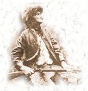

In the Draper Manuscripts on micro-film (roll 12, series DD, item #51)There is a letter from Dr. James Calloway (son of Elijah and gr.son of Thomas) to Lyman C. Draper dated Aug. 1845. Dr. James C. Calloway says "Capt. Thos. Calloway married about the year 1735, Mary Baker, in N.C. Mary Baker was aunt of Rev. Andrew Baker. This Mary is supposed to be daughter of Robert Baker.
Notes for Captain Thomas Calloway - Callaway Family Association Journal, page 76 Colonel Callaway's preparedness, page 14:
Thomas Calloway, Sr. settled in Halifax Co, VA about 1740 or later. He was a Vestryman at Au Trim Parish, Halifax Co., VA in 1752 (page 13 Vol 2 Old Churches and Families of Va by Meade.) He was an Ensign, then Captain in the Colonial Troops from Halifax Co, VA in the French and Indian War (1735-1760). There are numerous deeds recorded in Halifax Co made by Captain Thomas Calloway. Capt. Thomas Calloway and his family moved to North Carolina about 1774 and settled in what was then Surry Co, later Wilkes Co, now part of Wilkes Co has been taken for Ashe Co. He and his sons were in many struggles during the Revolutionary War. (Draper MS). After the Revolution he and his sons William, Joseph and Thomas, Jr. went to South Carolina. They were living there when the first census of US was taken. (Page 69-96 Dis-Draper MSS "Kings Mountain Pitts Heroes. page 451")
Captain Thomas Calloway and his son Thomas, Jr later returned to North Carolina where Capt. Thomas died in February 1800 in Ashe County. The old Calloway Plantation bordered on the South fork of New river near Obids in what is now Ashe Co, NC. the old burial grounds are on the slope to the river and Capt. Thomas Calloway was buried there. His grave is marked with a rough stone shaft with letters T.C. chiseled on it by Daniel Boone. From "The Beginnings of the Calloway Family", page 4-5 He settled in Halifax Co., VA in 1752. He was an Ensign, then a Captain in the Colonial troops from Halifax Co., VA, in the French and Indian War. the fact that he had previously become an Indian trader probably brought about his military promotions. The same may be said concerning his brothers, Colonel Richard Calloway and Colonel William Calloway.
In 1753 the Indians were very troublesome. At this time the three brothers were called upon to go into active service with their volunteer companies. The Black Water Fort was assigned to Richard Calloway, the Pig River Fort to William Calloway, and Hickory's Fort to Thomas Calloway. For a period of three years these three Calloway brothers guarded the frontier of nearly fifty miles. They always discovered the Indians first, fired among them, and made them scatter like wolves. In 1756, the french & Indian War had begun and Captain Thomas Calloway served under the command of George Washington during the conflict.
After the French and Indian War, Thomas Calloway resigned his commission as a military officer and returned to private life. Pittslvania Co, VA had been formed prior to this time for he had served as appointment as high sheriff of that county after 1763. He owned thousands of acres of land there but was crowded out by a company of men who had land warrants that over-lapped some of his holdings. The King and parliament favored those of great wealth, so it was useless for an individual in moderate circumstances to make an appeal. For this reason, he sold off the rest of his land and emigrated to Surry Co., NC in 1774 and settled on a branch of the Yadkin river. This was the spring of the "Great May Frost". On May 4, 1774, the frost was so heavy that no one had ever seen a frost like it at that time of year. the frost was so severe that all vegetation that had life was struck dead.
Thomas Calloway hesitated, at first, to take part in the war (Revolutionary War). He could hardly think of separating from the Mother Country. He hoped for reconciliation after the Battle of Lexington of April 1775, and until the Battle of Bunker Hill, June 21, 1775, at which time George Washington took command. He (Calloway) had taken many commissions under the King's authority and this fact involved an oath of true loyalty to the crown of Great Britian. A pamphlet by Samuel Adams convinced Captain Calloway that the King himself had become a rebel in that he no longer protected his subjects, but that he had sent fleets and an army here to kill and destroy us, and that several acts of parliament had declared us out of his protection. He instantly declared himself a Bostonian, a title used by people later known as Whigs, and he, his sons, and sons-in-law volunteered in '76 to defend their country. this was when he was seventy-six years of age and was too old to command forces. So they gave him an honorable discharge. Colonel Cleveland is said to have told him he ought to charge the army with everything they used, observing that the individual could not hurt the public but the public could soon ruin the individual, but he (Thomas Calloway) reportedly replied that the public chest was poor too, and both public and individual had to bear a part.
Children of May Baker and Thomas Callaway are:
43 i. Mary Callaway, born Unknown. She married James M. Nye. 44 ii. Elijah Callaway, born Unknown. 45 iii. Shadrack Callaway, born Unknown. 46 iv. John Callaway, born Unknown. 47 v. Carey Callaway, born Unknown. 48 vi. Thomas Callaway, Jr., born Unknown in Essex, VA; died March 27,Notes for Richard Callaway:
1819 in Knoxville, TN. 49 vii. Elizabeth Callaway, born Unknown; died Aft. 1808 in
South Carolina. 50 viii. Richard Callaway, born Bef. 1746 in Ashe Co, NC; died March 05,
1822 in Ashe Co, NC.
Wounded by Tarleton's Calvary at Surprise Battle August 18, 1780. Wounded at the Perkins place on New River in Ashe Co, NC April 15, 1781. Shot in thigh by Zacharia Wells, thigh broken, left for dead. Richard moved to middle Tennessee and located in Franklin County on Duck river, raised a very interesting family and died there.
51 ix. James Callaway, born Unknown.Notes for William Callaway:
52 x. Charles Callaway, born Bef. 1746.
53 xi. William Callaway, born Bef. 1755 in Ashe Co, NC; died Aft. 1800.
From Callaway Family Association Journal, 1980, page 76:
DR. DRAPER's ACCOUNT. In his "Kings Mountain and Its Heroes," Dr. Draper tells us (Ch. 19, p.437, et seq.) that the Old Fields belonged to Colonel Cleveland, and served, in peaceful times, as a grazing region for his stock, and there his tenant, Jesse Duncan, resided. On Saturday, April 14, 1881, accompanied only by a negro servant, Cleveland rode from his "Round About" plantation on the Yadkin to the Old Fields, where he spent the night. Captain William Riddle, a son of Col. James Riddle of Surry county, both of whom were Royalists, was at that time approaching Old Field from Virginia, with Captain Ross, a Whig captive, and his servant, enroute to Ninety Six, in South Carolina.
Captain Riddle's party of six or eight men, reached the home of Benjamin Cutbirth, some four miles above Old Field on the afternoon of the day that Cleveland arrived at Jesse Duncan's, and abused Cutbirth, who was a Whig and suffering from wounds he had but recently sustained in the American cause. Riddle, however, soon left Cutbirth's and went on to the upper end of Old Fields, where Joseph and Timothy Perkins resided, about one mile above Duncan's. Both these men were absent in Tory service at the time; but Riddle learned from their women that Cleveland was at Duncan's "with only his servant, Duncan and one or two of the Calloway family."
Riddle, however, was afraid to attack Cleveland openly, and determined to lure him into an ambush the next morning. Accordingly, that night, he had Cleveland's horses secretly taken from Duncan's to a laurel thicket "just above the Perkins house," where they were tried and left. But, it so happened, that on that very Saturday, Richard Calloway and his brother-in-law, John Shirley, went down from the neighboring residence of Thomas Calloway, to see Col. Cleveland, where they remained over night. On the following (Sunday) morning, discovering that his horses were missing, Cleveland and Duncan, each with a pistol, and Calloway and Shirley, unarmed, went in pursuit, following the tracks of the stolen horses, just as Riddle had planned.
"Reaching the Perkins place, one of the Perkins women knowing of the ambuscade, secretly desired to save the Colonel from his impending fate, and detained him as long as she could, while his three companions went on, Cleveland following some little distance behind." She also followed, retarding Cleveland by enquiries, until his companions had crossed the fence that adjoined the thicket, where they were fired upon by Riddle's men from their places of concealment. Calloway's thigh was broken by the shot of Zachariah Wells, but Duncan and Shirley escaped. Cleveland "dodged into the house with several Tories at his heels."
There he surrendered on condition that they would spare his life; but when Wells arrived he swore that he would kill Cleveland then and there, and would have done so had not the latter "seized Abigal Walters and kept her between him and his would-be assassin. Riddle, however, soon came upon the scene and ordered Wells to desist; after which, "the whole party with their prisoner and his servant were speedily mounted and hurried up New river," traveling "mostly in its bed to avoid being tracked, in case of pursuit." Two boys, of fourteen and fifteen, "Daniel Cutbirth and a youth named Walters," had resolved to waylay Riddle on his return to Benjamin Cutbirth's, and rescue whatever prisoners he might have with him; but they were deterred from their purpose by the size and noise of Riddle's party as they passed their place of concealment that Sunday morning.
Riddle's party got dinner at Benjamin Cutbirth's where one of Cutbirth's daughters was abused and kicked by Riddle because of her reluctance in serving Riddle's party. After dinner Riddle's party proceeded up the bed of New river to the mouth of Elk creek, where the new and promising town of Todd now flourishes at the terminus of a new railroad now building from Konarok, Va., Cleveland meanwhile breaking off overhanging twigs and dropping them in the stream as a guide to his friends who, he knew, would soon follow in pursuit. "From the head of the south fork of Elk, they ascended up the mountains in what has since been known as Riddle's Knob, in what is now Watauga county, and some fourteen miles from the place of Cleveland's captivity," where they camped for the night.
Meantime, early that Sabbath morning, Joseph Calloway and his brother-in-law, Berry Toney, had called at Duncan's, and hearing firing in the direction of Perkins's home, hastened there; but, meeting Duncan and Shirley in rapid flight, they learned from them that Richard Calloway had been left behind for dead and that Cleveland was either dead or captured. Duncan, Shirley and Toney then went to notify the people of the scattered settlements to meet that afternoon at the Old Fields, while Joseph Calloway rode to Captain Robert Cleveland's place on Lewis Fork of the Yadkin river, a dozen miles distant.
His brother, William Calloway, started forthwith up New river and soon came across Benjamin Greer and Samuel McQueen, who readily joined them, and together they followed Riddle's trail till night overtook them ten miles above the Old Fields, where Calloway and McQueen remained, while Greer returned to pilot whatever men might have gathered to engage in the pursuit of the Tories. Greer soon met Robert Cleveland and twenty others at the Old Fields, and all started at once, reaching Calloway and McQueen before day Monday morning. John Baker joined Calloway and McQueen to lead the advance as spies or advance guards; and, soon after sunrise, the nine men who were in advance of the others fired upon Riddle's party, while Cleveland tumbled behind the log on which he was slowly writing passes for his Tory captors.
But Wells alone was shot, being hit as he scampered away by William Calloway, and was left as it was supposed that he had been mortally wounded. Riddle and his wife mounted horses and escaped with the others of his band. "Cleveland's servant, who had been a pack-horse for the Tory plunderers," was rescued" his master. Captain Ross, Riddle's Virginia prisoner, was rescued. Shortly after this Riddle captured on Kings creek at night two of Cleveland's noted soldiers, David and John Witherspoon, who resided with their parents on Kings creek, and spirited them many miles away in the mountain region on Watauga river. Here they escaped death by taking the oath of allegiance to the King of England, and were released; but as soon as they reached their home, David hastened to notify Col.
Ben. Herndon, several miles down the Yadkin, who with a party of men, under the guidance of the Witherspoon brothers returned and captured Riddle and two of his noted associates, Reeves and Gross, [sic - Goss] who were taken to Wilkesboro and "executed on the hill adjoining the village on a stately oak. Mrs. Riddle," who seems to have accompanied her husband on his wild and reckless marauds, "was present and witnessed his execution." Wells had been captured and hanged by Cleveland a short time before. (P.446.)
54 xii. Joseph Callaway, born Bef. 1755 in Ashe Co, NC;Generation No. 1
died Bef. 1830 in Callaway, MO. 55 xiii. Frances
1. Simon Baker was born Abt. 1500 in Faversham, Kent Co, England.
All history beginning with George Baker, born 1775 in England & Anna Swaine; going back to Simon Baker, born 1500 in Faversham, Kent Co, England; provided by Delbert L. Collins, Black Mountain, NC, Dec. 2000.
.
Child of Simon(1) Baker is:
+ 2 i. John(2) Baker, born Abt. 1525 in England.
Generation No. 2
2. John(2) Baker (Simon1) was born Abt. 1525 in England.
Notes for John Baker: Source: Delbert L. Collins, Black Mountain, NC, December 2000.
Child of John Baker is: + 3 i. Christopher(3) Baker, born in England.
Generation No. 3
3. Christopher(3) Baker (John2, Simon1) was born in England.
Notes for Christopher Baker: Source: Delbert L. Collins, Black Mountain, NC, December 2000.
Child of Christopher Baker is: + 4 i. George(4) Baker, born Abt. 1575 in England.
Generation No. 4
4. George(4) Baker (Christopher3, John2, Simon1) was born Abt. 1575 in England. He married (1) Ann French Windsor. He married (2) Anna Swaine, daughter of William Swaine.
Notes for George Baker: All history beginning with George Baker, born 1775 in England & Anna Swaine; going back to Simon Baker, born 1500 in Faversham, Kent Co, England; provided by Delbert L. Collins, Black Mountain, NC, Dec. 2000. Delbert L. Collins is descendant of Nancy Ann Baker & Andrew Burns, Sr. Nancy Ann Baker was daughter of Robert "Julius Bob' Baker who was son of John "Renta' & Elizabeth Terrill Baker. As of this date, December 27, 2000 this is new history to me and many other Baker family members that I correspond with. It is being entered here based on "Del" Collins over 20 years research! He has over 20,000 individuals in his file. Byron Brown.
Notes for Ann French Windsor:
Wife #1.
Notes for Anna Swaine:
Wife #2.
Part of passenger list of Ship ELIZABETH and ANN, April 1635, showing Alexander Baker, age 28, wife Uxor, age 23, daughter Elizabeth, age 3, son Christian, age 1 & possibly two other family members. William Swayne may be father of Alexander Baker's mother, Anne Swaine?
Children of George Baker and Anna Swaine are:
+ 5 i. Andrew "Andy"5 Baker, born 1604 in Buckinghamshire, England; died Abt. 1650 in England or America?.
6 ii. Caleb Baker, born Unknown in England. He married Unknown Haudnit.
7 iii. Samuel Baker, born Unknown in England.
+ 8 iv. Alexander Baker, born 1607 in England; died 1685.
Descendants of Simon Baker Generation No. 5 5. Andrew "Andy"5 Baker (George4, Christopher3, John2, Simon1) was born 1604 in Buckinghamshire, England, and died Abt. 1650 in England or America?. He married Unknown Wife. Notes for Andrew "Andy" Baker: The first four beginning generations of this file, from Simon, born abt 1500, Faversham, Kent Co, England, down through George, born abt 1575 in England & Anne Swaine Baker, was contribuated by Delbert "Del" L. Collins, Black Mountain, NC.
All the information on the Baker family history, beginning here and going down through John "Renta" Baker, has been gathered from submissions from many other Baker researchers. A great deal was found on LSD files & a great deal on the Baker-Bolling website. Many people have researched this family from John "Renta" & Elizabeth Terrill Baker, Andrew & Mary Molly Bolling, Robert & Susan Packer, & Andrew "Andy" Baker. That is a total of Six generations from the birth of John "Renta" Baker in 1735 to the birth of Andy Baker, 1604 in England. It does not seem prudent for me to try to duplicate what has already been done. What I will do as I enter this data through these six generation, is to enter data where the facts are not in agreement. You will find some disagreement! The researcher will be able to take a look for their own evaluation. Byron Brown, January 4, 2000! History used from Andrew "Andy" Baker through John "Renta" Baker taken from many Web sites as well as from internet communications.
Andy Baker came to America in 1624, settled in Boston, MA. He may have come with a group of young indentured servants (see comments in Patti Greer's notes below). One son was John. Sources and References: Ancestral File Number: NVWW-CV Many of the following References received through Pattie Greer, a descendant of Andrew "Andy" Baker. E.mail pgreer@rectec.net. These references confirm and document what is contained in my files! Byron Brown, September 2000.
BAKERS AND BRANCHES, By Fredia Sims Nelson published in 1987 located in The Tennessee State Library and Archives, 403 Seventh Ave. North, Nashville, TN 37243-0312.
World Family Tree CD: "Ten generations of John Baker, born 1624, Mass." World Family Tree CD: "Nine Generations of Robert Baker, born 1660, Mass."
Kentucky Historical Publication, Volume XLIX No 4. Andrew "Andy" Baker, born 1604 Buckinghamshire England to America 1624.
Kentucky Historical Society, Old Capitol Annex, Broadway Street, Frankfort, KY 40601, holds documents & publications on Andrew "Andy" Baker, born 1604 Buckinghamshire, England to America 1624.
HISTORY OF LANCASTER COUNTY by H. M. J. Klein, PH. D 1924, Volume 1
BAKER BOOK by J. Montgomery Seaver available in LDS Library, Salt lake City, UT.
LDS Baker family film, #0982430, 098717, 1502566, #169771, 1502550, 1697711.
Additional references on Robert Baker, gunsmith, born 1660, found through National Rifle Assn. publications
OLD BUFFALOE SETTLEMENT AND IT MAKER by Joseph D. Eagleston, Vol. 19 #4, October 1941 - Pg. 311-325, contains much early Baker family history.
KENTUCKY RIFLE ASSN. VOL VI-NO 1. Article on the Baker's Gunsmiths.
THE BAKER FAMILY OF GUNSMITHS - LANCASTER, PENNSYLVANIA compiled and documented by S. E. Dyke, Lancaster, Pennsylvania, 1972
The town in England. Also states data from Asvury Johnson, Papers filed in History socitey at Frankfory. Ky., and History Mag. Vol. XLIX No. 4. States that he came to Boston, Mass. in 1624.
SUBJECT: Baker family.
Then there is another one by Fredia Sims Nelson this one was not as old, done in 1975. Also in the LDS library in the Morman Files you can find where they wasproven and from what Temple. Also the World Family Tree Baker. Ninthgeneration was Robert Baker Born 1660 to 1665. Ten Generation was Johnborn 1644 about. in Mass.There is a lot on John father in the Hist. his passage. (Editors Note: Other researchers do not think Andrew was an indentured servant.) There a lot of thing I would like to ask you about. I've picked up some of my Baker through other branches of the family. Like in my Settle line this Settle Married this Girl then her father died and her mother remarried a Samuel Baker and took over her plantation. Well Mom Died. Samuel was not going to give his wife children there part of the plantation that was in Settle Wife father. So this Settle took Samuel to Court to get his wife part of the Plantation. From: pgreer@rectec.net (P. Greer) To: BBrown7152@aol.com
No I had on Andy before I seen that book by Katherine Baker Johnson. (Editors Note: there is no information on Andrew "Andy" Baker in Katherine Baker Johnson's work.) It was sent to me by Frances Jones. and I paid to have it copied It has the Tennessee State Library stamp on it also Reference --cs--71--.b17--1940. I want to say on Andy is out of the Lancaster Co. Pa. History written in 1924. Vol 1 by H.M.J. Klein, Ph. D. I don't think I have a copy of the Paper, just the Reference no. I have a copy of Fredia Book also I got it the same way. I Also have the copy of the book. I have a copy of the film of a Baker book by J. Montgomery Seaver. That is form the LDS Library . I've got copies off of the Baker Family #0982430 ;098717;1502566 that one is my Margaret U. Lofquist written in 1973; Then this one is on my Settle and Baker line of intermarriage # 169771 ; #1502550, # one that you just can not read or the film I got you couldn't is #1697711--- Robert Baker Gunsmith, that was through the NRA. See if you can find some of the old Buffaloe Settlement and it Maker by Joseph D. Eggleston. I found it Vol VI- No 1 Kentucky Rifle Association The Baker Family of Gunsmiths ---In Lancaster Co. 1717-1754-- Complied and Documented By. S. E. Dyke---Lancaster, Pennsylvania 1972 Did you happen to pick up on the message on Genforum (BAKER)? William Baker wrote that Andrew Baker 1604 is the son of Robert Baker, Knight, Buckinghamshire, Kent Co, England.
I have written for his aunt's e-mail to get a source for this info. Has anyone heard of this little piece of information from anywhere. It may give us a clue to our English side. Jean jvore@acsol.net new e-mail Subj: ROBERT BAKER Date: 9/19/00 11:25:33 PM Pacific Daylight Time From: jvore@iti2.net (Jean Vore) To: BBrown7152@aol.com (BBrown7152@aol.com) Here is the Gist of the article. The article was found a book published by the Tennessee Historical and Genealogical Society. The article goes: The first known ancestor of the Bakers of Hancock County was Robert I of England. Who was the King's personal Knight at the round table. The king gave him his daughter as his wife and many riches and bestowed him with a coat of arms. The Coat of Arms consisted of the castle with three roses in the yard.
The article goes on to say that Andrew of 1604 was the descendant that came to America. Then it tells about Robert and the rifles and his being in the Rev. War. ( Editors Note: Robert died in 1728, but many of his descendants were in the Revolutionary War.) Editors Notes: In the two above notes from Jean Vore, we possibly see a generation back from Andrew "Andy" Baker, as son of a Robert I of England, personal Knight of the King. More new information to uncover? BB September 2000.
Editors Note: Delbert L. Collins has researched this family for over twenty years, has over 20,000 individuals in his data base. His research goes four generations up from Andrew "Andy" Baker to Simon Baker, born 1500, Faversham, Kent Co, England. Maybe Robert Baker, personal Knight of the King will be found in the future. Byron Brown January 10, 2001.
I believe our Baker family came from Kent Co., England which would coincide with Andy's birth place of Buckinghamshire Co. The reason I say this there is an Elizabeth Baker in my husbands family.. no parentage mentioned but she married a Scott.. and they lived at Scott's Hall, Kent Co., England. Someplace else.. wish I could remember, I read about our Baker family and this Same Elizabeth Baker showed up .. both having the same birthdate and year... I have never been able to connect them exactly .. but there is a connection between my Husbands Elizabeth Baker and our Baker family. Also, to be able to gain permission to set up a Gun making company in this country would take permission of the King/Queen and that family would have to be very close to the King.. a Knight or perhaps a relative... For Elizabeth Baker b. 1540 and her husband Sir Thomas Scott b. 1519 were both connected to the Royal family. Elizabeth Baker being his second wife.
"The first known ancestor of the Bakers of Hancock Co. Tn. was Robert 1st. of England. Who was the King's personal Knight . The King gave him his daughter as his wife and a castle and many riches and bestowed him with a Coat of Arms. the Coat of Arms consisted of the castle with three roses in the yard. The earliest known American ancestor was Andrew Baker b.1604 at Buckinghamshire , England came to Boston, Ma. 1624 . His son John Baker was b. 1624 in Ma. and immigrated to Pa. His son Robert 2nd. b. 1655 Va. d. 1728 Lancaster Co. Pa. , Where he was granted land and a gun boring mill for the manufacturing of firearms, the Pa. riffle, by the King of England. Robert Baker being the first man in recorded history to design and manufacture the Pa. rifle. At his death , his son Caleb kept up the tradition and later used to great effect in the American Revolution. The rifle was later known as the Hog Rifle and the Kentucky Rifle in Danel Boone,s day."
Child of Andrew Baker and Unknown Wife is: + 2 i. John2 Baker, born Abt. 1624 in Mass.; died Abt. 1693 in Lancaster County, PA." I believe (don't hold me to it).. that I received most of my Baker information through the George W. Baker's (son of John Renta) family who was my ggg grandfather and his son's family Judge Samuel Baker who was my gg grandfather. As you will note in the genealogy sheets that George W. together with several of his children.. including Samuel Baker moved west into Missouri.. with Samuel later moving to Iowa. I do not have any proof of Andrew Baker of Buckinghamshire coming to this country, his birthdate, nor of his even staying here. The puritans/quakers kept good records. It is my opinion at this time... that he did not stay in the colonies, but returned to England.. else there would be death records and burial records in one of the Churches.
I do not believe that our Andy Baker was an indentured Servant for this reason.. In order to come to the Colonies from 1607-1640, you had to sign an allegance to the crown... You could bring with you servants but no indentured servants were allowed during this period. I am not sure when indentured servants were allowed into the colonies but know for sure it was not during the above periods. Also, on the ships passenger lists.. Servants were listed .. not all by their names but were listed as Servants of say SMITH, John.. etc.. I know that the Severns family (a knight for the crown) did bring with him and his new bride 3 servants but was not allowed additional servants until after 1640... But they were also sent by his father.. so were not considered indentured. They were free men and women. Not to be confused by being made a Freeman.. an oath taken by many of the Colonist during that period. Taking the Freeman Oath meant you had to be an upstanding member of the community and be an active member of the local Church.. The Oath merely was swearing your allegence to the Crown here again in the Colonies and you were then afforded the title of Mr. Mr. was the highest title ever to be held in this country. That is why George Washington said it was proper to call him Mr. President no more no less. It still rings true to this day.
Maggie I read about "Robert I" in your recent update of the Baker family and this is not the first time that I have heard of him. In "Hancock County Tennessee and Its People," Volume 11, 1994, there is an article by Bobby Earl Baker, a direct descendant of the Pennsylvania Rifle manufacturers. He also gives information about his line of ancestors that may add to your website. He writes, "The first known ancestor of the Bakers of Hancock County was Robert I of England who was the King's personal Knight at the round table. The King gave him his daughter as his wife and a castle and many riches and bestowed him with a Coat of Arms. The Coat of Arms consisted of the castle with three roses in the yard.
The original name was Becker or Beaker meaning a vessel for drinking wine. The Bakers may have been cup bearers at some court of higher or lower degree. The earliest known American ancestor was Andrew Becker b. 1604 at Buckingham, England who came to Boston, MA in 1624. His son John Baker was b. in MA in 1624 and then immigrated to PA. His son Robert II was born ca. 1655 VA and died 1728 in Lancaster Co., PA, where he was granted land and gun bearing mill for the manufacture of firearms, the PA rifle, by the King of England. Robert Baker was the first man in recorded history to design and manufacture the PA rifle. At his death, his son Cleb (note: Caleb? Linda) kept up the tradition and later used the rifle to great effect in the American Revolution. The rifle was later known as the Hog Rifle and the Kentucky Rifle in Daniel Boone's day.
James Baker, brother to Caleb, and also son of Robert II was the first man to acquire title to land in Ashe Co., NC. James Baker's son, Robert III, was the ancestor of the Hancock Co. Bakers. Robert was born in 1735 and fought at King's Mountain and is believed to be the brother of the famous Rev. Andrew Baker, a chaplain during the Rev. War. History and family tradition tell of Robert III rescuing William Blount from the British who held him captive during the heat of battle. This same William Blount was to become Governor of TN. He took Robert III home with him and he made the statement, "This fine young man, I would be proud to give my daughter." Robert III took the Oath of Allegiance to the Colonies Oct. 6, 1777. Robert III had two sons and a daughter. Son William was born January 31, 1789 in Rutherford Co., NC and married Elizabeth Wallen, daughter of Elisha Wallen, the famed Longhunter. William Baker was one of the trustees of Greasy Rock Academy, the first educational institute of Hancock Co.
William Baker was a veteran of the War of 1812 and fought in the Battle of New Orleans. He was later a surveyor into Missouri and Arkansas with Elisha Wallen for the government. He had twelve children: John Wesley, Andrew C., Mary, James, Emely, Susan, Joseph, William, Elizabeth, Anna, Claiborne, Jesse. Son John Wesley Baker, as an official of Hancock Co., gave state funds to Thomas T. Livesay to build the pike road from Rogersville by way of War Gap to Kyles Ford to the VA line now route 70 for the sum of One Hundred and Fifty Dollars. The son of John W. Baker was Simpson (died at age 25) who married Nancy Jane Testerman. Their son was Henry Tyler Baker, a successful merchant, who married Mattie Livesay, daughter of Sargent Milem Davis Livesay, a veteran of the Civil War. He fought at the battle of Cumberland Gap.
Henry Tyler Baker's sons were Rufus Henry, Howard Simpson, and John Wesley, artist craftsmen who cut the stone for the National Art Gallery in Washington, D.C........ The son of Rufus Henry Baker is Bobby Earl Baker, a Millright of International Card and Label Company, Rogersville, TN. He married Doris Jean Poteet and they have one son, Robert W. Baker IV who is currently employed by the U.S. Navy Civil Service......... He is married to the former Linda Downer and has two children, Robert V. and Allen." - Submitted by: Bobby Baker and R.H. Baker, Blackwater, VA.
Child of Andrew Baker and Unknown Wife is: + 9 i. Col. John6 Baker, born Abt. 1624 in Massachussetts; died 1693 in Chester/Lancaster Co, Pennsylvania.
8. Alexander5 Baker (George4, Christopher3, John2, Simon1) was born 1607 in England, and died 1685. He married Elizabeth "Farro" Flounery. She was born 1611 in England.
Notes for Alexander Baker: Historical Note: 1635, came to the New World on the ship Elizabeth Ann which landed at Plymouth Colony, Massachusetts. Religion: Was a free-thinker or Baptist. Source: Delbert L. Collins.
Information below taken from http://www.mayflowerfamilies.com/ships/elizabeth%5F%5Fann.htm This information did not come from Delbert L. Collins. Found on the website MAYFLOWER & EARLY FAMILIES.
Part of passenger list of Ship ELIZABETH and ANN, April 1635, showing Alexander Baker, age 28, wife Uxor, age 23, daughter Elizabeth, age 3, son Christian, age 1 & possibly two other family members. William Swayne may be father of Alexander Baker's mother, Anne Swaine?
THE ptie. hereunder named, with his wife and children, is to be transported to New England, imbarqued in the ELIZABETH and ANN, WM. COOPER, Mr. bound thither, the ptie. hath brought testimony from the Minister of his conformitie to the orders and, discipline of the Church of England, and from the Justices of the Peace, that he hath taken the oath of allegeance and supremacie.
ALEXANDER BAKER 28 Uxor ELIZABETH 23 ELIZABETH BAKER 3 years CHRISTIAN BAKER 1 CLEMENT CHAPLIN 48 WM. SWAYNE 50 Uxor -----wifeIn 1995 I was at Grove Okla Library and i Copied Page 27,28,29 on the Baker in a book called Pioneers into Mas By a POPE He give " Alexander, as. 28 with wife Elizabeth, as 23, daus, Elizabeth ae 3, Chridtian, as 1 came in the Elizabeth and Ann in April, 1835. Propr. at Gloucester before 1642. Settled at Boston; collar maker adm. to chh. with wife Elizabeth 4 (s or 8) 1645 Frm. May 6, 1646. Ch. B. in B.: Alexander b. 15 (11) 1635. Samuel b. 16 (11) 1637, John b 20 (4) 1640, Joshua b 30 (2) 1642, Hannah b 29 (7) 1644 -all bapt. 5 (8) 1645; William b. 15 (3) 1647 Joseph bapt. 8 (2) 1649. as 2 days. Sarah Bapt 25 (3) 1651, Benjamin b. 16 mar 1652, Bapt 27 (1) 1653. Josiah b. 26 feb 1654. The dau. Chirstian m. 18 (5)1654, Simon Roberts.
He d. 1685. Will dated 18 Feb 1684, Prob. 11 May 1685. in his 79th year 12 children living, viz. john Joshua, Eilliam, Josiah, elizabeth Watkins, Christian Roberts; gr. dau. Elizabeth Remington. " If any one finds this will will you please email me a copy. this is the only book Grove library has on Ma. I have been without a full computer for over a week. My husband tried to install a World Atlas, ( so I could find Faversham, Kent, England) and it took out everything. Got it fixed Sat. I stayed up late to do some looking. It looks like Del has done alot of looking and done some fine work.
I found Alexander Baker b. 1607, came to America in 1635 and settled in Boston, later moved to Conn. "Baker Genealogy" by J. Montgomery Seaver, page 45. It shows a son Joshua, in fact, three generations of Joshua. It states that some of this family moved on to Ohio. (nothing about Pa., but that doesn't mean that they did not move there first) NOTHING about George and Anna Swain. No Robert or Caleb. I do have Caleb Sr., married to a Hodnett which is very close to Haudnit. On my notes, I have that when Caleb moved to Conn., he spelled his name BACKER. His children and grandchildren used BAKER.
This line of the Baker family were Loyalist to the British Crown and following the end of the Revolutionary War the entire group left the United States settling in Cornwall, Stormont, Ontario, Canada. Descendants of Simon Baker Generation No. 6
9. Col. John6 Baker (Andrew "Andy"5, George4, Christopher3, John2, Simon1) was born Abt. 1624 in Massachussetts, and died 1693 in Chester/Lancaster Co, Pennsylvania. He married Francis Stephenson Abt. 1650.
Notes for Col. John Baker: The earliest known American ancestor was Andrew Baker b.1604 at Buckinghamshire , England came to Boston, Ma. 1624
. His son John Baker was b. 1624 in Ma. and immigrated to Pa.
His son Robert b. 1655 Va. d. 1728 Lancaster Co. Pa. , Where he was granted land and a gun boring mill for the manufacturing of firearms, the Pa. rifle, by the King of England. Robert Baker being the first man in recorded history to design and manufacture the Pa. riffle. At his death , his son Caleb kept up the tradition and later used to great effect in the American Revolution. The rifle was later known as the Hog Rifle and the Kentucky Rifle in Danel Boone's day.
+ 2 i. John2 Baker, born Abt. 1624 in Mass.; died Abt. 1693 in Lancaster County, PA. 2. COLONEL JOHN2 BAKER (ANDREW "ANDY"1) was born Abt. 1624 in Massachusetts, and died Abt. 1693 in Penn..
Notes for COLONEL JOHN BAKER: From Dorcil He settle in Path Vallie later known as Franklin County, Penn. He fought in the French and Indian Wars, as a Colonel. He was a Captain in the Rev. War. He was a trapper and Indian trader. He built a Block house that he traded in. He also sheltered the settlers during the Indian attacks. He immigrated to Providence R.I., and then to Salem. the Glouccester area of Penn. He Married Frances Stephenson.
More About COLONEL JOHN BAKER: Lived: In Lancaster County & Chester Counties, PA"
Maggie
The Only way to prove if they did exist in this country during the 1600's in either in Massachusetts or Pennsylvania is to seek out Church records... The colonist kept very good records.
I'd give a lot to just jump on a plane and go to MA.. and PA to search these church records.. Unfortunately, Doctors won't let me fly. If indeed our Baker's belonged to one of the Churches they would be recorded. I do believe that if they were here in the 1600's.. they would have entered this country as a Quaker.. I do believe that if they had not been Quakers and entered during the time period they would have been stoned.. LOL.. So, let's say they were not Quakers, but merely pretended to be same, they still would have been recorded in the church records.
There appears to be too much information regarding the Birth place of John Baker b. 1624. Born 1624 in the colonies would be only two locations:
1. Virginia
2. Boston, MA (possibly Salem - but doubtful)
So, that leaves Boston, MA as his birthplace and his birth record. That being the "Old North CAgain, I am too long winded. Hubby says I can't say hello to anyone in less than 10 minutes.. LOL...
As I said above.. I would give a lot to find these answers..
Children of John Baker and Francis Stephenson are: 22 i. Samuel7 Baker, born Unknown. Notes for Samuel Baker: Baker, Samuel. 1717-19, worked with his brother, Robert Baker, Lancaster Co. In 1719 Robert bought out Samuel's interests. Source: Gunamkers of Lancaster Co, PA by James Whisker. urch".. as the only church building in Boston in 1624. Do we have any close or even distant relatives in the Boston area? that could go to the Old North Church and search what records. Editors Note: Samuel & Robert (James) Baker appear to be the first gun makers in America based on historians.
From: pgreer@rectec.net (Patty Greer)
To: BBrown7152@aol.com
I've got a little time before I finish my Christmas dinner. All my family
is snowed and Iced in and we are getting sleet now.. I have your last 4 or 5
letters hear in front of me. ever thing that I have found indicates that
Robert and Samuel was Brothers. Where Samuel family is I sure would like to
know. In my Settle line there is a very interesting thing or court records.
It seams that in Westmoreland Co., Va. during the Sept. 1693 court session.
There was a suit against a Samuel Baker that had married Mary mother and
widow of William Strother. Since woman could not have a say in court her
husband John Settle done it on her behalf. Mary father died and they had a
plantation, Mary mother remarried Samuel Baker. Mary died. and Samuel was
not to give the Settle Children there part of the Plantation that he took
over when he married widow Strother. I wish I knew her name, but I don't
have time to work on it right now. This case is in the Orders 1690-1698
Westmoreland Co., Va. Samuel had to give Mary and Sole. Williams part of
the plantation.There is mention of a half Sister. It is in the old writing
and very hard to understand. Now this could not be Robert Son for the
dates is way off. This land was in Northumberland Co. upon the south side of
Herrin Creek, Beginning at the said mouth of the creek south half a point
to a marked Black walnut tree standing in a clear field (Don't you know it
there today) from thence East northerly upon the Herrin Creek northwest
along the said creek to the place where it began being opposite the land of
W. Thomas Vause. and my Mary Srother was born in England.
Now what I fine very unlikely or why what happened ????? Robert Baker Sr.
1660/1665 died before 30 Sept 1728 based on his son taking thing over. form
his father death. Now John Baker his supposed Father Died in 1728 all in
Lancaster Co., Pa. Son and father both died the same year. Robert no
will. John no will. No ship names for these men when they came over
hear.
I also fell these Baker John, Robert Sr. had more children than just that one child. Maybe not the same wife. For a woman was just to have children and clean there home and work in the fields. as the old saying went, one on her apron strings, one in her arms, and one in the oven. That made them a man so they through. If she died we got another one to take her place or leave them to raise there self. so I fell there a lot more of these children in this part of the family. I heard a long time ago that there was 5 boys and 3 girls in England one of the boys left England and went to Germany then later on one of his children came to America. Now it may not be all hear say. Maybe a few facts. In all of this. I know that my line does come out of the gunmakers. I also know that there are another line, not Baker that had a Patent on the Ky. rifle. Merry Christmas Patty and Raymond Greer. of Snow cover Okla. Christmas 2000.
23 ii. Robert Baker, born Abt. 1665 in Pennsylvania; died Bef. September 30, 1728 in Lancaster County, Pennsylvania
Generation No. 7
23. Robert7 Baker (John6, Andrew "Andy"5, George4, Christopher3, John2, Simon1) was born Abt. 1665 in Pennsylvania, and died Bef. September 30, 1728 in Lancaster County, Pennsylvania. He married (2) Susan Packer. She was born Abt. 1688. He married (3) Unknown Wife Abt. 1682. She was born Unknown, and died Unknown.
Notes for Robert Baker:
Notes for Robert (James)t Baker:
A number of Baker researchers have noted that Robert Baker and his sons were gunsmiths in Pennsylvania. I found the following information in: Whisker, James B. Arms Makers of Pennsylvania. Selinsgrove: Susquehanna University Press, 1990. See pages 37-38. ________.
Gunsmiths of Lancaster and York Counties, Pennsylvania. Lampeter; Edwin Mellen Press, Ltd., 1990. See pages 6-8. Grove, Charles. "List of Gunsmiths of Lancaster County Pennsylvania, Period 1728-1863."
Journal of the Lancaster Historical Society. Vol. 72, no. 1, 1968, pages 50-60. (Ran Raider)\
Ran Raider: rraider@discover.wright.edu
Baker, Caleb, 1719-41, Gunsmith, worked with his father, Robert Baker, on the confluence of Pequa [Pequea] Creek and the Susquehanna River, Lancaster Co.
Baker, Robert (d. 1728), 1717-28, gunsmith at the confluence of Pequa Creek and the Susquehanna River, Lancaster Co.
Baker, Samuel. 1717-19, worked with his brother, Robert Baker, Lancaster Co. In 1719 Robert bought out Samuel's interests.
Excerpts from GUNSMITHS OF LANCASTER COUNTY, PENNSYLVANIA by James B. Whisker: "Nearly all studies of the Pennsylvania-Kentucky long rifle assume this distinctively American rifle was invented in Lancaster County sometime in the second quarter of the eighteenth century. We find a number of pre-Revolutionary War gunsmiths who may have made Pennsylvania-Kentucky long rifles. We have no idea what the early Baker files may have looked like, c. 1720. Lancaster County was formed out of Chester Co, an original county of the Province of Pennsylvania, on 10 May 1729. Several of the Baker gunsmiths in the Pequea Valley, had worked and died before the formation of the county."
"ROBERT BAKER ( -1728)., gunsmith. Robert Baker was a gunsmith between 1717 and 1728 at the confluence of Pequea Creek and the Susquehanna River in Chester (now Lancaster) County. In 1719 Robert Baker took over the shop operated by his brother, Samuel Baker. Robert died intestate 19 September 1728, the Orphan's Court ordered an inventory of Robert's estate. It showed tools of the gunsmith and blacksmith. The total value of the tools in his gun barrel boring and gun shop was 295 pounds/10/7."
Editors Note: Based on all information found, I believe Samuel Baker & his brother Robert Baker were probably the first gun makers in America. National Geographic Magazine stated that the Baker's invented the Pennsylvania-Kentucky Long Rifle. Unable to find the date of that article.
Excerpts from A RECORD OF THE BAKER AND BUFORD FAMILIES with Allied Lines by KATHERINE BAKER JOHNSON, 1940: "The first of this family in America appears to have been Robert Baker who settled in Conestoga Township, Chester County, Pennsylvania. This township became Lancaster County in 1729, as this family does not appear on the tax list of any of the other townships, it is possible that the settlement in Conestoga was the original home of the family from their arrival in America.
Abner Baker, Great Grandson, states in his "Life Book", that this family came to America from England in the early part of 1700, and that three brothers, Samuel, Andrew and Caleb were gunsmiths, with a grant from the King of England to manufacture arms for the colonies.
The first record we find of Robert Baker, is the administration of his estate dated Sept 13, 1728. Robert Baker died without a will and his son Caleb Baker was appointed administrator of his estate; along with these original papers at the Register's Office at the Court House in Lancaster County is the Administrators Bond; and inventory and the administrator's accounts; the bond was signed by the administrator; Joseph Higginbotham and Tobias Hendricks, sureties; and witnessed by Douglas Baker and Joshua Lowe. The inventory enumerates chattels, harvest crops, live stock, and 450 acres of land, this was signed by Tobias Hendricks, David Jones and Joseph Higginbotham, appraisers. Amount the creditors were the names of Caleb Baker, Robert Baker, Jr, and Douglas Baker."
ubj: BAKER RIFLES
GOOD BAKERS ~ BAD BAKERS
Often when I talked to Aunt Lillie about her family, she would refer to them as Good Bakers, Bad Bakers. It wasn't until after her death that I began to understand what she was trying to tell me. She told me that her grandmother, Ibby Baker, was a Baker before she married. She said the Ibby was a schoolteacher, and that she went to Buffalo Creek in Owsley County to teach. Here she met and married Jackson Baker. Jackson died in 1878, leaving Ibby and their small son George. After the death of her husband, Ibby returned to Clay County and lived with her brother. She died a year later. Her son George W. Baker was adopted and raised by her brother, William Baker and wife Elizabeth Parker.
Aunt Lillie wrote me a letter one time about the Bakers on Buffalo Creek in Owsley County. These were the one's she called "Bad Bakers". She said her father received word from his aunt, Martha Gabbard, to come up to Owsley County, that the family had sold some land, part of which belonged to his father. His aunt went on to tell him that she was holding his part of the money from the sale for him. Aunt Lillie said; "We didn't want him to go. We thought it was a Catch! We thought they were trying to get him up there to kill him." To the relief of Aunt Lillie and the family, her father George made the trip to Bull Skin and returned home safely.
I once asked Aunt Lillie where the Bakers came from? She said; "They came from Liverpool England, they were gunsmiths and that they came to this country to make guns for the colonies." At the time Aunt Lillie told me this, I paid little attention. Of all the great things Aunt Lillie told me, this statement would prove the most important. She died without me having the opportunity of telling her what I learned about this unique family. So I would like at this time to share my story with you:
We begin our story with Abner Baker, first County Clerk of Clay County. Abner was born in Prince Edward County, Virginia, September 18, 1775. He came to Kentucky in 1795 and first settled in Garrard County where he married Elizabeth Buford. He was appointed Clerk of Garrard County in 1803 and held this office until he moved to Clay County in 1807. Abner Baker kept a records keeping book throughout his life he called his "Life Book". In this small notebook he kept records about his family. You can imagine my surprise when I read the following statement taken from this book. Abner Baker stated that there were three brothers Samuel, Andrew and Caleb, who first came to America. They were gunsmiths with a grant from the King of England to manufacture guns for the colonies. He goes on to say that his grandfather, Caleb Baker, and his family removed from Lancaster, Pennsylvania, bought land and settled in what was then called "The Backwoods" in Amelia County, Virginia on Buffalo Creek.
Was this just a coincident, or were Aunt Lillie and Abner Baker talking about the same Baker family? A Mr. Samuel E. Dyke, a researcher in Lancaster County, Pennsylvania, finally convinced me I was on the right tract when I came across some writings. This was a report given to the Kentucky Rifle's Association in 1972. It seems that the Association had employed Mr. Dyke to do some research for them. They wanted him to see if he could find out the person or persons responsible for making the first Pennsylvania Rifles or what was sometimes call the "KENTUCKY LONG RIFLE". Mr Dyke in his report states; "We feel as though these early gunsmiths came into Chester, Pennsylvania, or New Castle, Delaware, from abroad and migrated up the Susquehanna River to where the Pequea flows into it and set up shop making guns." He goes on to say that Robert Baker came into Lancaster County Court on August 15, 1719 and asked permission to erect a gun boring mill at the mouth of Pequea Creek on his land. Permission was granted. Robert Baker and his son Caleb set up their gun shop and operated it until 1728. It was at this time Robert Baker died. His son, Caleb Baker, continued to operate this gun shop until the family moved to Amelia County, Virginia.
The above Caleb Baker was the grandfather of Abner Baker, first Clerk of Clay County. Although Abner Baker is the one of the most interesting of people, he is not the subject of our story. I only used his statements and those of Mr Dyke to establish the fact that some of the Bakers now living in Clay and Owsley Counties can trace their ancestor's back to these early Pennsylvania Bakers.
Abner Baker, in his "Life Book", stated that his grandfather Caleb, had two brothers, Andrew and Samuel Baker. These two brothers would prove the most adventurous of this Baker Family. In the early 1750s Andrew Baker, John Cox, Enoch Osborn and several other neighboring families in Pennsylvania set out on a westward journey. This journey eventually led them into the Yadkin River Valley, in present day Wilkes County, North Carolina. This small group of Pennsylvanians would be among the first to settle in the area.
Some of these people settled along the Yadkin River, others of the more adventurous nature, crossed the Blue ridge Mountains and settled along New River in what is now Ash and Allegheny Counties, North Carolina. No white man had attempted settlement here before. New River was known at the time only by it's Indian name "Saxphaw". It was here, along the south branch, Andrew Baker made his first home.
Andrew Baker remained in the area of New River until about 1753, He then decided to push even deeper into Indian country. He moved down New River into what is now Grayson County, Virginia, very near the North Carolina line. Here Andrew staked out a large track of land he called his "Peach Tree Bottom" track. But the next summer, he and his family were run out by the Indians. He returned to his prior settlement on New River, where he would remain for the next ten years or so. He did, however, make one other attempt to settle his "Peach Tree Bottom" track. This was in 1767 or 1768. This time he encountered another problem. In Andrew's long absence, Dr. Thomas Walker, a surveyor for the Loyal Land Company, had staked and claimed the "Peach Tree Bottom" track, for his employers. He had to now purchase a 1000 acres of his original claim before he could resettle on it again. It seems that it just wasn't meant to be. The following year, he was once again forced out by the Indians and back to his old settlement. One might wonder why Andrew was so determined to settle this particular track of land. The answer lay in what was on and in this land, more so, than the land itself. For you see, one of the largest iron ore deposits in this area was discovered on the land. I think Andrew Baker, and at least one of his sons, were involved in the Iron business. His son James Baker and he built several large iron furnaces along Cranberry Creek, a tributary of the south branch of New River. The remains of some of these Iron Furnaces can be seen even today. They were at their peek production during the Revolutionary War."
The Balance of this article THE GOOD BAKERS - THE BAD BAKERS by Clyde N. Bunch is found in notes on John "Renta" Baker in this site.
Editors Note: It is interesting that a Thomas Anderson, Sr, from Kentucky, was with General Andrew Jackson at the Battle of New Orleans and stood next to another Kentucky sharpshooter, who shot General Puckingham from his white charger. The general thought he well out of range but underestimated the accuracy and range of the "Kentucky Long Rifle"! After the battle, Thomas Anderson walked back to Kentucky only to find that his family had moved to Dubois County, Indiana. So he just walked on over to Indiana. Two of his sons, John and Thomas, Jr, married two of my GG aunts, daughters of David G. & Nancy Brittain Brown, in DuBois County, Indiana. Byron Brown January 16, 2000.
Wins Battle of New Orleans:
The tragic mistake of the battle was that it was fought after the peace had been signed days earlier, Dec. 24, 1814, ending the war. In that era of slow communication, news of the peace did not reach Jackson in time to prevent the conflict.
---------------------------------------------------------
From Compton's Interactive Encyclopedia Deluxe © 1999 The Learning Company, Inc.
Editors note: Some researchers report that Robert Baker was ordered to go to England to make guns for either King William or Queen Anne according to time frame. In America these two Wars with France were know as King Williams War & Queen Anne's War. They covered the period from late 1680s-1714.
He returned to America with a grant to make guns for the Colonies. This is why some other researchers think Robert Baker was the first of this line to come to America, which was actually the time of his returning to his native soil. Some say he came from Liverpool, England. He may have on his return from making guns & probably teaching cutting of rifling in barrels to others while there.
Robert Baker settled in Conestoga Township, Chester County, PA (later Lancaster County, PA). He bought 500 acres of land on the Susquehanna River from Col. John French in 1717. (This seems to be time frame of his return to America, so we might assume that he was ordered to England by Queen Anne whose War dates were 1702-1713.) This land was located on mile from the junction of Pequea Creek and the Susquehanna River. Robert's son Caleb paid taxes on this land from 1719 until 1727. Robert and his sons were gunsmiths and were commissioned by the King of England to make fire arms for the Colonies. Later the Bakers would join the Colonies against England in the Revolutionary War.
August 15, 1719, Robert Baker had Jacob Taylor, Surveyor, with permission from William Penn, lay out a site for erection of a gun mill. See Taylor Papers #2921. From Pattie Greer file. In February 1721 iron ore was found near the site of the Baker tract. From Pattie Greer file.
Robert Baker left no will and his son Caleb was appointed administrator of his estate, dated September 13, 1728. Caleb Baker being part owner of the business and oldest son, took over and operated it until 1741, when he sold out to Jacob Godin.
The list of children is on file in the Historical Society at Frankford, Ky, and in History Mag. Vol. XLIX No.4.
Following from A RECORD OF THE BAKER AND BUFORD FAMILIES with Allied Lines by KATHERINE BAKER JOHNSON, KNOXVILLE, TENNESSEE, 1940:
Page 167, Conestoga Assessment 1720-21 Robert Baker & Son --- 50 pounds.
Page 170, 1721, English Conestoga Assessments --- Robert Baker & Son --- 31 pounds.
Page 176, 1722,
Page 178, Conestoga Township 1724-25 ---- Robert Baker & Son --- no amount given, Note, this list is in Ellis & Evans' History of Lancaster Co, PA, p. 21
Page 186, 1725-26 Conestoga rate --- Robert Baker & Son --- 7 shillings & 6 pence --- tax,
Page 188, 1725-27 Conestoga Rate, Robert Baker & Son --- no amount given.
In 1915 the Lancaster County Historical Society erected a marker were Postlethwaite Tavern Stood in which the First Courts of Justice were held in Lancaster County. This spot was not far from the Baker tract. Included in the program was as address on "Old Conestoga Neighbors", printed in Vol. XIX pamphlet #8
Page 278 has: Over toward Pequea Creek, near Susquehanna, were Peter Kline, Peter Creamer, Francis Norley, Joseph Rebman and Robert Baker. (Editors Note: Note that most all of Robert Baker's neighbors seem to have German names. Caleb Baker, Robert's oldest son always signed his name Beaker & possibly spoke with a German assent. Growing up in a predominantly German speaking area may explain this trait.)
Page 284 - The speaker refereed to the 1721 assessment list and the English on the list included Robert Baker.
Excerpts from a letter to Mrs. Katherine Baker Johnson, February 14, 1940, written by Lettie M. Bausman, Record Searcher: "The Province of Pennsylvania was an English possession and so all people who were subjects of the King of Great Britain had free access into Pennsylvania. No account was taken of them, hence no ship lists. Now your Baker name is straight English; I believe Caleb was raised here in Pennsylvania, and his association with German neighbors may have caused him to acquire a German accent. "
Robert Baker was sometimes known as James. From Pattie Greer file.
Descendants of Simon Baker
Generation No. 8
24. Capt. & Esquire Andrew8 Baker (Robert7, John6, Andrew "Andy"5, George4, Christopher3, John2, Simon1) was born Abt. 1702 in Pennsylvania, and died 1781 in Grayson Co, Virginia. He married (1) Mary Mollie Bowling, daughter of Col. Bolling and Anne Cocke. She was born Abt. 1722 in Kippax, Charles City, Prince George Co, Virginia, and died Aft. 1776. He married (2) Unknown Spouse.
Notes for Capt. & Esquire Andrew Baker:
Some researchers place Andrew Baker's birth about 1722, & others at 1702 & 1692 in Lancaster Co, PA. He died in Ashe Co, NC or Grayson Co, VA?
Andrew married Martha/Mary Polly BOLLING, daughter of John BOLLING Jr./Major and Elizabeth BLAIR. Martha/Mary was born 15 Jul 1733 in Petersburg, Dinwiddie Co., Va..She was 13 years of age when she married Andrew Baker. This from Pattie Greer file. ( Editors Note: Since John Renta Baker's grave markers both give 1735 as his birth year, I believe Mary Bolling ws born 1722 if she married at 13 years of age and Andrew was born about 20 years earlies. Editors Note: ( The parentage of Mary Mollie Bowling has no proof!)
Andrew Baker
18th Century North Carolina New River Settlers
The 1778 Wilkes County Tax List indicates some of the settlers west of the crest of the Blue Ridge. It is interesting to note that there were more families in 1782, apparently several families left the area during the Revolutionary War years.( Some of the Tory Families left for more pro-British areas region west of the crest of the Blue Ridge, in 1778, was considered CAPTAIN ANDREW BAKER'S Company. William Colvard was the justice of the peace for the area. William Ray was a constable and Daniel Richardson, Andrew Baker Jr., and William Clay were appraisers in the southern part of Baker's District. In the Northern District of Baker's Company Micajah Pennington was the justice of the peace, Benjamin Pennington served as constable, Beverly Watkins, James Ward and Abijah Pennington were the appraisers in the head of households for that part of Wilkes that became Ashe
CAPT. ANDREW BAKER
James Baker
The first white inhabitants of Ashe Co. were the hunters. It has been estimated that a hunter could earn as much as $1600 to $1700 dollars per season in hunting and trapping game for pelts. It was a love of this income and the hunt that compelled many men to live their lives on the fringes of civilization. Capt. John Cox is quoted as saying he could remember only 3 cabins from the lead mines ( Fort Chisewell) to the head of the Watauga. But the land entries of 1780 are replete with references to places such as George Collin's old camp, Martin Gambill's old camp, William Howell's old cabin, Sizemore's camp, BAKER'S CAMP, Charles Collin's old camp, and John Robinson's cabin.
By 1779, when Ashe developed into 2 militia districts, political power appeared to be resolving around 2 locations: one in southern Ashe in the area of Boone with ANDREW BAKER, a justice of the county court and Captain of the Militia, the political leader: and the second in the northern district centered around Penington's Mill (located on Grassy Creek just south of the Virginia border ) with Micajah Penington , a justice and Captain of the Militia, the political leader of this area. Both Micajah Penington's and ANDREW BAKER'S roles in power were short-lived. It is believed the Penington's were Quakers and were not considered ardent enough Whigs. In Sept. 1799 Micajah's estate , along with a number of friends, was considered confiscated, although there is no evidence it was ever sold. In a list concerning the status of several justices (prepared by Benjamin Cleveland, Colonel of the Militia, on Oct. 6th, 1781)only William Colvard was acting in his capacity as Justice of Ashe Co. George Morris had resigned; James Tompkins refused to qualify; Thomas Elledge, Abner Smalley and Micajah Penington were listed as Tories; and ANDREW BAKER was reputed to have taken protection of the enemy. It is not known how accurate Cleveland's judgement was concerning these people. ANDREW BAKER was appointed a road overseer in June 1782, and about a decade later both Penington and BAKER were Justices and Penington was also a Captain of the Militia.
Excerpts from an oral presentation by William Doub Bennett on August 13, 1983 at the workshop sponsored by The Virginia Genealogical Society and The North Carolina Genealogical Society held at Peace College, Raleigh NC.
******************************************************************
First Settlement on the Upper New in Virginia
******************************************************************
Virginia Militia in the Rev. War
*******************************************************************
***********************************************************************************
Chronicles of the Scotch-Irish Settlement in Virginia
1765. Bleavins (Blemins) vs. Newell--O.S. 174; N. S. 62--Bill, 27th Sept.
1805. In 1765 or 1768 Andrew BAKER settled and made an improvement on land
under the Loyal Company now in Grayson County. Several years afterwards he
sold to Jeremiah Harrison, who also removed to and lived on the land for
some time, and sold to James Mulkey, who settled and lived on the land and
then sold to James Blevins, father of orator John Blevins, 1772. James then
moved to the land, where he resided until his death, in 1801. In 1790 James
Newel made an entry on the lands. George Reeves deposes that Andrew BAKER
was the first settler on the land, in 1768. Copy of survey of 1,000
(4,400?) acres (known as the Peach Bottom) surveyed for Peter Jefferson,
Thomas and David Meriwether, and Thos. Walker, 16th March, 1753. Many
valuable entries, plats and surveys.
John Cox vs. Newell--O.S. 174; N. S. 62--Similar suit to above. Orator
settled in the Loyal Grant in 1765 opposite to Andrew BAKER. Enoch Osborn
deposes, 1809, that Cap. Jno. Cox settled on the Peach Bottom 44 or 45 years
ago. George Collins deposes, 1809, he moved to the country in 1767. Lyman
Chalkley, Chronicles of the Scotch-Irish Settlement in Virginia, III
(Baltimore: Genealogical Publishing Co., 1980) p. 143.
***********************************************************************************
Ruddle's Fort
Ord. that Robert Baker, ANDREW BAKER and Samuel Smith and Robert Johnson or any 2 of them Procession all the lands between Buffalo and Spring Creek that runs by Douglas Bakers to the county line.
Ord. that Thomas Graham and John Hill Procession all the lands between the creek that runs by Douglas Bakers and the creek that runs by Robert Baker dec. as far as the county line.
We the subscribers Robt. Baker and Robert Joston, ANDREW BAKER and Samuel Smith have procession the lands following, Hambeltons land himself present, Downes himself present, MacBrides himself present, Puckets himself present, Hugh Macelroys Steel present, Smiths and Edward Jonstons Jonston present, Callo Bakers himself present, Samuel Baker himself present, Elets himself present, Rices himself present, Grigs and ANDREW BAKER themselves present, Douglas Bakers and Robert Bakers Thomas Graham present, Riches himself present, Hannans and Jonstons themselves present.
Land not procession'd for want of some person to shew the lines Randols, Cobs, Thomsons, Hopkinses, Wammeks.
From the "Virginia Genealogist."
****************************************************************** The Virginia Genealogist- British Mercantile Claims
Douglass Baker. 1.6.1 3/4 Dead; estate in the hands of Doc. ANDREW BAKER of Prince Edward, sufficient to pay his debts.
*****************************************************************<** Rowan County NC Deed Book
March 4th 1763 Elisha Lawrence late of Rowan to ANDREW BAKER for 450 acres on Grassy Bottom Creek granted by Granville Dec. 25th 1761.
March 11th, 1768 ANDREW BAKER & wf. Susannah (S) to James Sheppard for 450 acres on Grassy Bottom Creek.
*******************************************************************
History and Genealogies of Old Granville Co. NC 1746-1800
1758
ANDREW BAKER is mentioned on a list of hands to lay off a road from the Chappel to Flat River.
****************************************************************** Orange Co. NC Deed Book 5 Vol. 1
ANDREW BAKER Warrant June 19, 1760
640 acres on a drain of Kemps Br., waters of Nuese, adjoins Osborne Jeffreys.
" To Timothy Shaw- living on the land "
Surveyed Jan. 31, 1761
ANDREW BAKER Entry June 19, 1760
640 acres on drains of Kemp Br., Waters of the Nuese, adjoins Osborn Jefferys.
ANDREW BAKER Warrant May 16, 1757
640 acres on Little Barton Creek on south side of Nuese R.
Enterd Mar. 9, 1757
Assigned to Nathaniel Kimbrough
Surveyed July 2, 1757
Deed July 25, 1760
****************************************************************
Orange Co. NC Court of Sept. 1755
ANDREW BAKER vs. John Bumpass Petition
Orange Co. NC Court of Sept. 1758
ANDREW BAKER vs. Michael Synnot Case
************************************************************************************
The Granville District of North Carolina
1751. Marmaduke Kimbrough. 2 Nov. 1752. 600a in Orange Co., joining James
Russell and the N side of Buffiloe Cr. Wits: Jno Haywood, Jas Carter
surveyed 14 June 1751 SCC: Andrew BAKER, Griffin Green, Charles Robinson
Dep Sur Plat reads "line in Bladen County" Hofmann, The Granville District
of North Carolina 1748-1763, volume 2:286.
1751. James Carter. 1 May 1753 632 acres in Rowan Co., joining the North
Bank of the South fork of Deep River. Wits: Jno Haywood, James Campbell
surveyed 19 June 1751 SCC: Andrew BAKER, Griffin Green, Charles Robinson
Dep Survr Plat reads "Land in Bladen County; surveyed for Andrew BAKER"
Hofmann, The Granville District of North Carolina 1748-1763, volume 3:50.
1751. Entries in the Earl of Granville's Dist (1751-1752) North Carolina
Archives Stack #SS592. #1282 David Strahan 7 Nov 1751, 640a "on the south
side of S. Alamance above a mile above Andrew Bakers uper line" Entry 39.
Miles S. Philbeck, Bladen Prect/County North Carolina Surviving Land
Warrants and Surveys 1735-1749 and Surviving Land Entries 1743-1761 (1985)
********************************************************************
Wilkes Co. NC Wills and Administrations Jan. 24th, 1780 for the preceding year
Richard Burton John Burton (Ad) John Baker, ANDREW BAKER (witnesses)
********************************************************************
From Patti Greer: Andrew Baker will Book 3, page 353, Prince Edward Co, VA. Left money to a library.
Subj: Re: Baker gunsmiths
Date: 12/7/00 6:07:21 PM Pacific Standard Time
From: whisker@bedford.net (James B. Whisker) To: bbrown7152@aol.com
M A Baker, 1860, Fayetteville. Noted in Col Robert Gardner's SMALL ARMS
MAKERS, before 1857 thru 1863 or later; converted earlier flint muskets to
percussion.
I have an 1860 ad from Fayetteville Observor
war parties and committed depredations on isolated settlements such as Ruddle's Mills. Ruddle, therefore decided for the Saftey of his own family and those that had gathered around him to move into Hinkson's deserted fort on the Licking River. He added to and fortified it, making it one of the largest and strongest in the Kentucky wilderness capable of accommodating from 2 to 3 hundred people. His garrison composed of 49 men including ANDREW BAKER
From the" Register of the Kentucky Historical Society", The Destruction of Ruddle's and Martin's Forts.
******************************************************************* Processional Returns in St. Patrick
1780 Elizabeth Martin dau. of Thomas Martin dec. bound to Andrew Baker, Esq.
From the book " Adventurers of Western Waters ",
Andrew Baker signs an oath of allegiance and disavows any allegiance to England and its king. Found on this list also is the name of Robert Baker. Dated 1777 Montgomery Co. VA
From the Members of the Virginia Militia in the Revolutionary War
Andrew Baker in Prince Edward County Va. 1779
From Colonial Records
Andrew Baker appears in Wilkes Co. NC in Vannoys District 1781
Wilkes Co. North Carolina Taxables.
Subj: Re: Baker gunsmiths
Date: 12/7/00 6:07:21 PM Pacific Standard Time
From: whisker@bedford.net (James B. Whisker) To: bbrown7152@aol.com
I know I am out on a limb but I have put Mary Mollie in that marriage. She would have been considered a sister to Benjamin and would be the right age for an early marriage."
Editors Note: It is reported by Pattie Greer, that Mary Mollie Bowling was only 13 years old when he married "Old Andrew Baker".
I think I have solved the mystery Mary Molly Bowling/Bolling.... but no absolute proof. Also my theories have not always proven to be correct.
But, since I believe that Mary Molly Bolling's birth records, etc., were expunged from the Bolling family. To the point that Mary Molly spelled her last name Bowling.. With no parentage listed. Please bear with me for a few sentences.
#1. My "founding Father" idol has always been Thomas Jefferson. I think I have read everything about him that has been published. (this will have bearing on my theory)
#2. Proof = In Colonial America, (as per English Law) it was illegal for any "white" man to marry an Indian. Punishable by death. This rule had one exception. It was legal in the Virginia Colony. Sanctified by England, since Pocahontas was of "Royal" blood.
#3. You will note in all the Bolling records that no Bolling left Virginia prior to the Revolutionary War. (Except Mary Molly Bolling)
#4. The Randolph's married heavily into the Bolling Family. When the Revolutionary War became evident, the Randolph's ( including their Bolling Spouse and children).. left Virginia and returned to England. After they War the returned to the United States. (Historical fact documented in many places) The Randolph's returning to England had a profound affect on Thomas Jefferson, as his mother was a Randolph and his Uncle that had "raised" him was a Randolph and the Randolph property abutted Thomas Jefferson's.
#5. *It was not until after the Revolutionary War that the Bolling's moved to other States in the Union. (except Mary Molly). Most of the States in the United States did not prohibit the marriages of Indians and Whites.
#6. Mary Molly could not have identified herself as being part Indian, or it would have been a death sentence for her, her husband and her children.
#7. Also, I now believe that Mary Molly Bolling was a daughter of John Bolling and Mary Kennon. The birth date is right. I do not believe her to be the daughter of Robert Bolling and Jane Rolfe. But rather the granddaughter of Jane Rolfe and Robert Bolling.
Below are some notes from the "Jones Family" regarding their connection to Pocahontas. This site also gives additional Pocahontas genealogy.. e.g. her grandparents, etc. It was the last 2 sentences that got me thinking. (now that is sometimes a dangerous thing..
Notes for MATOAKA "POCAHONTAS" POWHATAN:
For a full view and additional genealogy regarding Pocahontas visit the site listed below.
Click here: http://www.angelfire.com/co2/family1/
Mary Mollie Bowling (Bolling) was my great great great great grandmother. Margaret Gourley/Baker Severns.
42. Mary Molly18 Bolling (Robert17, John16, Robert15, Edward14, Tristram13, Edward12, Tristram11, Robert10, Robert9, John8, Robert7 Debolling, John6, William5, John4, Robert3, William2, William1) was born 1702 in Virginia37, and died WFT Est. 1764-179837. She married Andrew Baker WFT Est. 1714-174537, son of Robert Baker.
Maggie
rom: MaggieCal
To: BBrown7152
"On a flyleaf of Collection of Laws of Virginia by Purvis (1682) written in handwriting of Colonel Robert Bolling: Robert Bolling, son of John and Mary Bolling of All Hollows Barking Parish, Tower Street, London, was born 26 December 1646 and came to Virginia 2 October 1660: and in the year 1675 married Jane, daughter of Thomas Rolfe, gent. by whom he had one son John Bolling, 27 January 1676. She dying, he married Anne daughter of Major. John Stith in 1681, by whom he hath Robert Bolling, born 28 March 1686, Edward Bolling, born 1 October 1687, Anne Bolling, born 22 July 1690, Drury Bolling, 21 June 1695, Thomas Bolling, born 20 March 1697, Agnes Bolling, born 30 November 1700, and that Almighty God Bless these blessings shall be the continued prayer of their father. Robert Bolling." From: R. Bollings Batte Papers Biographical Card Files. In this card collection there is no mention of Andrew Baker nor Mary Bolling. The only Baker listed in the card index that would show a connection with Andrew is the name Caleb Baker. The marriage of Andrew and Mary Bolling Baker was not found during Batte's research nor were the supposed brothers of Andrew, Robert and Samuel. "
Here is the site that I got it from:
If you can figure it out.. let me know.. shall return to the above site and see if I can find any other clues..
After perusing and checking out a few names and dates thoroughly.. the names you sent me appear to be what I have. Since I didn't have all the DeBolling names in my data base. I checked the LDS site and they had exactly what you sent me..
The appearance of Mary Molly as the daughter of Robert Bolling is not surprising.
Would feel better about it if the Stith family was not so adamant about her not being the daughter of Ann Stith. And, also the fact that Robert and Andrew never mention Mary Molly. She seems like a nice lady to me...
Byron:
Though we are still working on authentication, we have enough authenticated
evidence for me to tell you the following story..
The immigrant, Robert Bolling (1646-1709) had a younger son named Edward, who
was born in 1687. Edward met and married a girl named Slaughter (we think her
first name was Mary) when he was still a teenager. He also became a ship's
captain for Col. Byrd while still in his teens.
Edward and his wife had a son named Benjamin, who was born in 1709 in
Virginia. A year later, Edward died at sea at the mighty age of twenty-three.
There is strong evidence that Edward's widow left VA shortly after Edward's
death and settled in NC. We also believe that the Baker family had also settled
there, because it was at this time that we first see unions between Bollings and
Bakers, and this habit continued for more than one generation.
An example of this is the fact that Benjamin Bolling (Edward's son) had a son
who married Martha Baker, and the names are connected by marriage even after some
of the folks migrated to Kentucky.
Because of Molly's birth date, I am personally unable to identify who her parents
might be. She was too old to be a child of Edward Bolling and too young to be a
child of Edward's son (and therefore a sister to the renowned Benjamin
(1734-1832), about who we talk so much.
To help me out, I am turning to the fellow I have selected as the greatest
authority on the Benjamin Bolling line. That is Chet Bolling, a descendant of the
two Benjamins and a student of the line for almost half a century.
Chet has been under the weather recently, but if he knows the answer as to who
Molly's parents were, you can bet that we'll get a quick answer by e-mail.
In the meantime, I must admit that I cannot pin down the parents of Molly Bolling
Baker, although I am aware of the close relationship between the two families.
We'll just have to wait and see what Chet has to say.
See you in Richmond next August.
Bud
Wm. Kennon Sr., was a great uncle to Mary Bolling Baker. The Kennon's and the Bollings owned over 100, 000 acres in the Amelia and Henrico Counties. [Land Office Patents and Grants]
It is not known when Andrew Esq., came to Virginia, with his brother Caleb, or perhaps with his brother Douglas, who bought 1,415 acres in Amelia Co., on both sides of Spring Creek, off the Buffaloe River in 1739. [ L.O.P & G. of Va., # 19 page 928] Andrew and Mary "Molly" Bolling were married around 1740 since their son Elijah was born in 1742. ["History of Virginia Baptists"] Mary's mother Elizabeth Lewis Bolling, died when she was very young, in 1728, and her father had remarried.
In the 1750's, Andrew moved his family to the New River Valley in North Carolina in what is now Ash and Wilkes County. The Baker's Cox's, Osborn's, Boone's and several other families with roots back to Pa., moved their families where no white man had been before. In 1753, Andrew moved his family north again, to what is now Grayson County, Va. He staked out 4,00 acres and called it Peach Tree Bottom. In 1754, the family was ran out by the Indians, so he moved his family back to the New River Settlement. In 1765 Andrew went north again with several families to make a permanent settlement at Peach Tree Bottom. The Loyal Land Company (owned by Peter Jefferson, of Thomas Jefferson Thomas and David Meriwether and Dr. Thomas Walker) now owned this property. Andrew had to buy 1,000 acres from them. In 1769 Andrew sold his land to Jeremiah Harrison. [Chronicles of the Scots-Irish Settlement in Va., "New River Frontier Settlement on the Va. and N. C. Border 1760-1820" by Paula Hathaway Anderson-Green]
On July 14, 1769, Andrew bought 262 acres in Prince Edward Co., on the branches of Spring Creek, adjoining Smith and Grymes property. Land Office Patents and Grants #38, page 646] The Smith's were relations of Mary Bollings. This would mean that Andrew had moved his family back to where Caleb Baker and the Bollings lived. During the 1770's, Andrew was part of the Virginia Militia and the continental armed forces, Pre-Revolutionary War. He helped arm the militia, provided supplies for troops and helped to build roads. [Revolutionary War Public Services Claims]
He was Captain Andrew Baker of the Rifle Company in Prince Edward County. ["Ancestry Hometown" Ancestry Library] On October 11, 1776, Andrew's name appears on a petition of the inhabitants of Prince Edward Co., Va., showing support for the form of government adopted for "Our United American States". ["The Virginia Magazine of History and Biography," Vo. 18, #1, page 42] From May 4, 1780 to July 14, 1780, there are several entries for Captain Andrew Baker, Military Officer, in the Revolutionary War Public Service Claims. [Rev. War Public Service Claims, Court Booklet: pages 2a, 4, 28, 41: Certification 2, Lists Page 3: Assignee, Charles Venable] These are the last records on Andrew Baker.
All history on the Bowling (Bolling, De Bolling, De Boulogne) family submitted by Delbert L. Collins, Dec. 2000.
Date: 12/7/00 10:21:50 AM Pacific Standard Time
From: pgreer@rectec.net (Patty Greer) To: BBrown7152@aol.com
In your email of Dec. 7, 2000 . I have never seen or even heard that Rev.
Andrew Baker that married Elizabeth Avent was not married before. In the
Avent side of the family it Refers to Andrew Elder Barker?Baker? Not Rev.
But that is because of the different believes Elder and Rev. can have the
same meaning. I have John Renta Bakers s/o Andrew And Bolling. I have
never seen him any where else. He is not one of James , children but is a
James was his uncle.. I think that the way I have it. I sure wish I could
find these Blunt's first name. What I moved is my Morris Baker to James and
Nellie Ellender; Andrew that married Martha [Patsy] SMITH 8 Jan 1782,
Justice Bowlin , Samuel; John: and George to James. I did not think for a
long time that all of these children belonged to Andrew Baker and Bolling.
Because of the birthdays and that is just too many children for that one
woman. You look at the ages and then the age of Bolling and she was to old
to have the last children. When the Indians was giving money for being
Indian blood ever one changed thing around so they could get some money and
land. That when thing got all mixed up and has been for years. Even some
today wants to do the same things. Forget it there no money and there no
cards being giving today. Are we all ready for a DNA proof. PattY Greer of
Okla.
First let me say with absolute conviction that no girl child of Robert Bolling 1646England-1729VA and his first wife JANE ROLFE the granddaughter of Pocahontas and John Rolfe, Jr. has ever existed. From their marriage ONE and only ONE child was born named JOHN Bolling b. 27 January 1646 Virginia and he died 20 April 1729 Virginia. This son JOHN and his ONLY wife MARY KENNON had only ONE son and FIVE daughters.
This lineage is known as "The RED Bolling's" i.e. Indian Blood descents.
· Next, ROBERT Bolling 1646-1709 raised his son for three years after the death of JANE Rolfe six months after birth of John. She died of Typhoid, and had been looked after by visits of particular Indians related to Pocahontas, and they looked after baby JOHN with visits until after the third marriage of Robert Bolling in December 1681. Until this marriage happened, Robert raised John with a Nannie in his household. The third marriage for Robert happened with Anne Dade Stith, d/o John Drury Stith.
Their descents are known as "The WHITE Bollings", NO Indian Blood.
Child and son JOHN 1676 married in 1697 to MARY KENNON 1676-1744VA, and the marriage is recorded. From this ONLY marriage one and only one son was born and he was named JOHN Bolling born 1700VA. There are 5 sisters to this JOHN Bolling, Jr. 1700 who grew up a privileged life in Colonial America. He did have one big vice and that was he John Jr. liked women. He also liked to drink and party, but he followed in his father and grandfather shoes as a Member of The House of Burgess, the ruling political body of Colonial America.
This John Bolling, Jr. inherited all his Father and Grandfather holdings and property which had become massive with thousand of acres, purchased and given by the Indian Nations to Robert Bolling 1646-1709 and wife Jane Rolfe, the Granddaughter of Pocahontas, and the only living daughter heir of her father Thomas Rolfe b. 1615 in America before any trip to England, but after death of Pocahontas in 1617 at Godsend, England, he Thomas was left to be raised by Uncle Henry Rolfe, the younger brother of John Rolfe, Jr. who lived in London. Henry raised Thomas and the Royal Crown of England then trained Thomas to be a military officer. At the age of 25 Thomas opted for a military career in Colonial America and was sent to Virginia in 1640 as a Lt. in the English Military. Thomas Rolfe had total of three wives, and the older brother of JANE ROLFE b. 1655VA was THOMAS ROLFE, Jr. b. 1645VA who had his death will probated in 1720, which mentions three children including a Thomas Rolfe III, Dorothy Rolfe, and a wife's nephew Wm. Roads. Thomas Rolfe 1615 had another son named William Rolfe born 1647VA and JANE ROLFE born 1655VA. ROBERT BOLLING 1646England-1709VA married JANE ROLFE at her age of 19 just before her 20th birthday. She became immediately pregnant with baby JOHN who was born 1676
1? There are no children by Thomas Rolfe 1615 named "Martha" or "Mary".
Now back to baby JOHN BOLLING b. 1676VA, he was raised by a Nannie in the household of ROBERT for three (3) years before ROBERT remarried in December 1781 to ANNE DADE STITH, d/o John Drury Stith. During this three year period, and a few years thereafter, the Indian Nations have recorded relatives of Pocahontas that continued contact with ROBERT and his son, just as they did during the very short marriage of JANE ROLFE to Robert. JOHN BOLLING was the only heir to Pocahontas in 1676, as her ONLY living Great Grandson of this historical descent status.
OTHER older TWO Grandsons of POCAHONTAS: Thomas Rolfe, Jr. b. 1645VA and William Rolfe b. 1647VA. These two Grandsons were by blood the UNCLES of baby JOHN Bolling b. 1676. They and JANE ROLFE b. 1655 were children of Jane Poythress the second wife of Thomas Rolfe 1615, and the first wife born in North America, as the daughter of his fellow military Lt. Francis Poythress and wife Alice Peyton.
North American School Systems fail to educate anyone about the life of JOHN ROLFE, Jr. and his families except for POCAHONTAS as his wife, and the raising of TOBACCO to be exported to England.
Back to baby JOHN BOLLING b. 1676VA he was raised by a Nannie and a Stepmother Anne D. Stith from 1681 until his marriage in 1697 to MARY KENNON b. 1676-d.1744 at age 68. JOHN & MARY had only one son, and they named him JOHN Bolling, in 1700 VA. He became known as John Bolling, Jr. and later became known as (Major) John Bolling who grew up a privileged life in Virginia, loved women, and drank quite a lot. Yet, he inherited all his Grandfather and Father's land holdings which totaled in the thousands of acres in Virginia. Much of it lands given to Robert Bolling & Jane Rolfe, his grandparents.
This John Bolling, Jr. had two wives, the first being ELIZABETH LEWIS b. 1700-d.1756VA
The second wife was ELIZABETH BLAIR b. 1709 or 1712 VA (never proven the actual birth year) she died 1775 in Chesterfield, VA.
1? JOHN Jr. 1700 has (5) SISTERS, none of whom married a BAKER.
2? JOHN Jr. 1700 has 22 children, none of whom married a BAKER.
· JOHN BOLLING 1676-1709, had a 1 / 2 blood brother named ROBERT Bolling b. 1682 - d. 1749 who married his wife in 1706, MARY ANN COCKE b. 1688 as d/o Richard Cocke & Anne Bowler. This ROBERT became known as (MAJOR) Robert Bolling. His mother was Anne Dade STITH b. 1677VA
· The first child born was MARY (Mollie) Bolling b. 1708 who married (Capt.) WILLIAM STARKE and had two children:
1? Rebecca Starke who married #1 a Mr. Ravenscroft, then married #2 George MacMurdo
2? Elizabeth
married Capt.) Robert Walker.p>
· The second child was Elizabeth Bolling 1709
· The third child was Ann Bolling 1713 md. Mr. John Hall 1709 Scotland birth
· The fourth child Lucy Bolling 1719 md. (Col.) Peter Randolph, the Grandson of Wm. Randolph 1651 England-1711 one of the Co-Founders of College of William & Mary
· The fifth child Jane Bolling 1722 md. Hugh Miller from Scotland birth
· The sixth child MARTHA Bolling 1726 md. Richard Eppes, s/o Mr. Francis Eppes
· The seventh child Susannah Bolling 1728 md. Alexander Bolling 1721VA-1766VA (1st cousins) son of Stith Bolling & Elizabeth Rodgers.
· ROBERT BOLLING 1730, the eighth child, who had TWO wives:
1? IN 1751, Martha Bannaster
2? IN 1758, Mary Marshall TABB, and she gave birth to a son named ROBERT BOLLING in 1759.
· This son Robert had FOUR wives
There are no descents named MARTHA or MARY or MOLLIE who married a BAKER.
AMONG ALL the ROBERT BOLLING 1646 England descents of his blood lines that have a BAKER marriage is that of his GREAT GREAT GRANDSON, JUSTICE (Justus) BOLLING born 1751 who married MARTHA "Patty" BAKER, d/o JAMES BAKER 1774-1843. This MARTHA is the GRANDDAUGHTER of Morris Baker 1750-1812 & Patsy Smith.
James Baker 1774-1843 is son of JAMES BAKER sq. c 1729 PA
· James Baker c 1729 lived in Culpepper & Amelia County, VA before going to Granville County, NC & later to Ashe County, NC (formerly Surry County)
· James BAKER Esq. c 1729PA was the first person to own land in the new formed ASHE COUNTY, NC
The first child of JUSTICE (Justus) BOLLING born 1751 who married MARTHA "Patty" BAKER, was named:
· ANDREW L BOLLING b. 1783 (Reverend) md. Temperence Johnston d/o William Johnston a descent from Scotland.
JARED BOLLING born 3 June 1732-died 1780NC , father of Justice (Justus) was a son of (MAJOR) JOHN BOLLING, Jr. 1700VA, a GREAT GRANDSON of POCAHONTAS and JOHN ROLFE, Jr. JARED BOLLING married first wife, MARTHA (Maxene) MOXLEY, mother of JUSTICE 1751 who md. Martha "Pattie" BAKER.
AMONG ALL the ROBERT BOLLING 1646 England descents of his blood lines that have a BAKER marriage is that of his GREAT GREAT GRANDSON, JUSTICE (Justus) BOLLING born 1751 who married MARTHA "Patty" BAKER, d/o JAMES BAKER 1774-1843. This MARTHA is the GRANDDAUGHTER of Morris Baker 1750-1812 & Patsy Smith.
James Baker 1774-1843 is son of JAMES BAKER sq. c 1729 PA
· James Baker c 1729 lived in Culpepper & Amelia County, VA before going to Granville County, NC & later to Ashe County, NC (formerly Surry County)
· James BAKER Esq. c 1729PA was the first person to own land in the new formed ASHE COUNTY, NC.
The first child of JUSTICE (Justus) BOLLING born 1751 who married MARTHA "Patty" BAKER, was named:
· ANDREW L BOLLING b. 1783 (Reverend) md. Temperence Johnston d/o William Johnston a descent from Scotland.
JARED BOLLING born 3 June 1732-died 1780NC , father of Justice (Justus) was a son of (MAJOR) JOHN BOLLING, Jr. 1700VA, a GREAT GRANDSON of POCAHONTAS and JOHN ROLFE, Jr. JARED BOLLING married first wife, MARTHA (Maxene) MOXLEY, mother of JUSTICE 1751 who md. Martha "Pattie" BAKER
I hope this helps clear up the false data being passed around about certain MARY (MOLLIE) BOLLING marriage to a BAKER. Every Mary or Martha child of ROBERT, JOHN and JOHN, Jr. has been proved beyond a shadow of a doubt to whom they married and there are no BAKER marriages of these descents named herein.
Notes for Joseph Baker:
For all of Thomsons, sons and daughters of John Thomson, two of whom
married Bakers I used Our Ewing Heritage With Related Lines by Betty J.
Durbin Carson and Doris M. Durbin Wooley Vol.1 pg. 314-318.
Elizabeth Alford, Dau. of Thomas and Elizabeth Alford married Joseph
Baker 1767-1870, son of Joseph Baker and Nannie Smith. They were married
Montgomery Co VA
28 Feb 1793 Source: Wythe Co VA marriages.
Douglas Baker (son of Joseph and Hannah) b. Nov 1776 m. Mary Hoge --list
of children and spouses comes from Listen to the Mockingbird by Daniel
Dunbar Howe, 1961
Date: 9/17/00 10:24:34 AM Pacific Daylight Time
From: jvore@iti2.net (Jean Vore)
BY CLYDE N. BUNCH
Kd4vqd@juno.com
Jackson was then ordered to defend New Orleans. Finding the city foolishly ignoring its danger, he quickly put it under martial law and rallied the citizens to prepare for attack.
To build up his small regular army, he recruited frontier riflemen from Tennessee and Kentucky and organized a force of raw volunteers--free blacks, planters, and pirates headed by the freebooter, Jean Lafitte (see Lafitte). This was the awkward force of some 5,500 that Jackson fused together.
Beyond the crude American ramparts of cotton bales lay 10,000 British regulars. These were veteran troops who had fought in Europe's Napoleonic Wars. Beginning late in December 1814 they bombarded the American defenses, setting the cotton bale ramparts afire. Between skirmishes and shellings, Jackson's men doggedly threw up earthen breastworks.
On Jan. 8, 1815, with only contempt for Jackson's amateur army, the British troops charged. It was a slaughter. Wave after wave of the charging redcoats fell before the grapeshot and rifle bullets of the grim American defenders. Shattered, the British withdrew, having suffered 2,237 casualties, including three generals. Jackson's casualties that day were only 71. (See also War of 1812.)
COLONIAL FAMILIES OF PHILADELPHIA
"In April or early in May, 1722, Philip Syng had surveyed by his
order and to his use two Hundreds acres of land upon the west bank of
the Susquehanna River, at a place known as "The Mine". This
tract was within the bounds of Pa., but it was claimed by Philip
Syng and Co., under a Maryland title. A complaint having been
made by Robert Baker and James McClean before Francis Worley,
Esq., a Justice of the Peace for Chester County. Syng was committed
into the custody of the Sheriff of Philadelphia by the warrant of Sir
William Keith, Baronet, the Governor who had met Syng at Patterison's
on April 4 and threatened to have him punished if he presumed to make
any survey of the land in question.
Editors Note: It is believed that this "Mine" is where the ore came from to make Baker guns.
Editors Note: Robert (James) Baker, the gunsmith, must have more than one wife.
I have changed birth dates of all children according to dates found in Patti Greer's file.
Andrew Baker was born in what is now Lancaster Co., Pa. Caleb was his administrator through the Orphans Court. [History of Lancaster Co., Pa.the files of Pat Greer, descendant of Robert Baker.] Andrew's mother was unknown, but she was not the mother of Caleb if he was born in the 1690's. (as most files show) Caleb moved his family to Amelia Co., Va., around 1738. In 1742 he bought 430 acres and in 1743 he bought 970 acres from Wm. Kennon's Jr. & Sr. Both sides of the Buffalo River and North Fork of the Buffaloe River. [from the files of Pat Greer] In 1748 Caleb bought 304 acres in Amelia Co., on the south side of the South Fork of the Buffaloe River. [Land Office Patents and Grants, State of Va. #26, page 470] Above From Willy's Konieczny Notes.
John Baker
Morris Baker
Robert Baker
******************************************************************
Early Settlement in the New River Valley of North Carolina
ANDREW BAKER is thought to have moved into Ashe Co. NC in 1755. The French and Indian War forced him to leave the area, but he is supposed to have returned about 1765.
A study of loose papers at the North Carolina Land Grant Office gives some added information. On April 3, 1780 ANDREW BAKER made an entry for a tract of land on the South Fork which was surveyed a week later. In these papers , reference is made to " the line of his former survey " and to his " old survey ". Since it is known that entries were being made for land just to the south ( in the McDowell Co. area) in early 1763, there is every reason to believe that ANDREW BAKER had returned to the New River once the threat of Indians had abated.
In 1765 when the Bournes settled on Elk Creek, other settlers were moving into Peach Bottom Tract near the Virginia- Carolina line surveyed for Dr. Thomas Walker, Peter Jefferson and Thomas and David Meriwether on March 16, 1753 as Loyal Company land.
ANDREW BAKER from the Yadkin is said to have been there in 1754 buying from the Loyal Company but was driven out by Indians. His first permanent settlement was in 1765. The John Cox , Ephraim Osborne and John Hahs families accompanied Baker on his return in 1765, Cox's settling opposite BAKER. BAKER soon sold land to Jeremiah Harrison, James Mulkey and James, John, and Samuel Blevins. The Osbornes located between Bridle and Saddle Creek opposite the BAKERS.
John Cunningham-- Prince Edward, Aug. 21, 1832. Born 1758. Enlisted May 1776, in Militia company under Capt. Chas. Allen, Lt. Joseph Parks, and Ensign James Allen. Marched by Manchester, Williamsburg, and Yorktown to Hampton where he was stationed under Col. Meredith and Maj. James. Discharged at Portsmouth after term of 7 and 1/2 months. In May 1779, volunteered under Capt. John Holcomb, serving about 3 weeks at Petersburg under Col. E. Meade and Beverly Randolph. Early in 1781 volunteered under CAPT. ANDREW BAKER, Lt. Joseph Parks, and Ensign Joseph Read, and joined Gen Greene near the Dan River, where the company was attached to the Regiment under Col. Otho H. Williams. Marched toward Hillsboro. Has always lived in Prince Edward.
William Morgan-- Prince Edward, Sept17, 1832. Born 1757. In summer of 1776 enlisted as private under Capt. Robert Hughes and Lt. Edward Munford, marching from Cumberland Co. by way of Richmond and Williamsburg to Yorktown, where applicant was discharged after 2 months service. In April, 1780 joined a troop of Calvary from Powhatan Co., command by Littleton Mosby and Lts. Horatio Turpin and Wade Mosby.
Discharged after 2 months of service at Richmond. In Feb. of 1781 he joined a Rifle Company in Prince Edward, where applicant then resided. The Company Officers were CAPT. ANDREW BAKER, Lt. Joseph Parker, and Ensign Read. It joined Gen. Greene near the Dan River, and was attached to a regiment commanded by Col. Call of the Regular Service.
This was obtained via the internet through "Ancestry Hometown" in the Ancestry Library.
Clement Lee Jno. Medley
Jno. Blevins Isaac Weaver
Wm. Porter Wm. Hash
Wm. Lee Stephen Ozburn
David Fulton Jonathan Ozburn
Dossswell Rogers Wells Ward
John Rice Jno. Hash
Joseph Wallen Joshua Pennington
John Wallen Jas. Ward
John Liannes? Ephriam Ozburn, Junr.
Thomas Wallen Timothy Roark
Willian Ridel Ephriam Pennington
Herman Cox Ephriam Ozburn, Senr.
Jeremiah Cloynch Stephen Ozburn, Senr.
Marshal Duncom George Ewing, Junr. Thompson's
Samuel Cox John Fluty, Robt. Buchanan's
Wm. Henderson Alexr. Buchanan, Do.
Jno. Collins Henry Long, McCorkle's
Samuel Collins Jas. Thompson
Wm. Glaves of Thompson's Comp. Josian Ramsey
Lieut. Henry Francis Samuel Newberry
1754. Andrew BAKER from Yadkin, North Carolina, one of the first pioneers
to claim land on the banks of the New River near the Virginia--North
Carolina border, had an experience parallel to that of Henrich Grob. Driven
out by Indians about 1754, BAKER returned approximately ten years later,
bringing reinforcements, the Cox, Osborne, and Hashe families. This
settlement by BAKER and associated families illustrates a typical pattern:
"These groups did not move into the public domain in ignorance of their
exact location; but rather, like the children of Israel, they sent their
Calebs and Joshuas ahead to spy out the land and prepare the way."
Certainly Andrew BAKER was a Joshua on the New River frontier. After his
initial essay when he came from the Yadkin Valley in the 1750s but was
driven back by the Indians, he returned about 1765 with enough people to
make a permanent settlement. Probably Andrew BAKER was related to the
Samuel BAKER whom Ramsey identifies as operating a public mill on Davidson's Creek in the Yadkin Valley in 1753; this BAKER came from either Chester County or the Susquehanna Valley in Pennsylvania. Paula Hathaway
Anderson-Green, "The New River Frontier Settlement on the Virginia-North
Carolina Border 1760-1820," VMHB, 86(Oct. 1978):418.
Captain Ruddle, who came from the Shenandoah Valley, was one of Kentucky's earliest settlers. While General Clark was conquering the Northwest he lived on Corn Island and later at Logan's Fort near what is now Stanford, Kentucky. In 1779 he established his own settlement at Ruddles's on Hinkson Creek in what is now Bourbon County.
As the Revolutionary War progressed, the Indians, incited by the British, traveled in Parish, Prince Edward Co. Virginia 1760-1767.
State Census of North Carolina 1784-87
Wilkes Co. Captain Nathaniel Vannoy's District
Taken by Rowland Judd, 1787
ANDREW BAKER 1 white male 21-60-- 4 white males under 21 and above 60-- 3 white females all ages
From the Wilkes Co. NC Will Book 1
1780 Elizabeth Martin dau. of Thomas Martin dec. bound to Andrew Baker, Esq.
From the book " Adventurers of Western Waters ",
Andrew Baker signs an oath of allegiance and disavows any allegiance to England and its king. Found on this list also is the name of Robert Baker. Dated 1777 Montgomery Co. VA
From the Members of the Virginia Militia in the Revolutionary War
Andrew Baker in Prince Edward County Va. 1779
From Colonial Records
Andrew Baker appears in Wilkes Co. NC in Vannoys District 1781
Wilkes Co. North Carolina Taxables
[ Extracted from the Lenoir Family Papers ]
Year- 1782
Captain Alexander Gordon's District
Reason Baker 250 ___ ___ 2
Captain Samuel Johnson's District
Morris Baker 150 ___ ___ 10
Year- 1787
Captain Vannoy's District (3)
Andrew Baker ___ 1
George Baker ___ 1
Captain Nall's District (4)
Morris Baker 150 1
James Baker 300 2
Captain Judd's District (6)
Peter Baker 89 1
John Baker 50 1
Captain A. Gordon's District (7)
John Baker ___ 1
Bazel Baker ___ 1
Year- 1788
Captain Nall's District (4)
James Baker 300 1
Morris Baker 150 1
Thomas Baker 100 ___
Captain Judd's District (6)
Peter Baker 139 1
Phillip Baker 50 1
Captain Gordon's District (7)
Bazell Baker ____ 1
Obediah Baker 40 1
Bazell Baker Sr. 50 1
Captain Bunyard's District (13)
Andrew Baker Jr. 100 1
George Baker ___ 1
Andrew Baker Sr. 200 1
Year- 1789
Captain Nall's District (4)
James Baker 300 2
Morris Baker 150 1
Captain Judd's District (6)
Peter Baker 189 1
Captain Oliver's District (7)
Baswell Baker 159 1
Baswell Baker Sr. 50 1
Captain Cleveland's District (10)
Andrew Baker ___ 1
Captain Bunyard's District (13)
Andrew Baker 100 1
Year- 1790
Captain McNeils District (6)
John Baker 50 1
Peter Baker 289 1
Captain Harvil's District (7)
Bassel Baker Jr. 151 1
Bassel Baker 50 ___
Captain Cleveland's District (10)
Andrew Baker 70 1
Captain Bunyard's District (13)
Morris Baker 150 1
James Baker 300 2
Year- 1791
Captain Nall's District (4)
James Baker 300 1
Morris Baker 150 1
Thomas Baker ___ 1
Captain Harvil's District (7)
Bazel Baker ___ 1
Bazel Baker Jr. 150 1
Captain Cleveland's District (10)
Andrew Baker 60 1
Captain Bunyard's District (13)
James Baker 250 2
Year- 1792
Captain Nall's District (4)
Thomas Baker ___ 1
Captain McNeil's District (6)
John Baker 50 1
Captain Harvell's District (7)
Isaac Baker 125 1
Bazel Baker Sr. 50 1
Bazel Baker 150 1
Captain Cleveland's District (10)
Andrew Baker 80 1
Captain Bunyard's District (13)
James Baker 400 2
Morris Baker 310 1
Year- 1793
Captain Nall's District (4)
Thomas Baker ___ 1
Captain Lewis's District (7)
Isaac Baker 125 1
John Baker 50 1
Captain Cleveland's District (10)
Peter Baker 320
Bakers I list in Carolinas
Henry Baker, 1759-1773, Long Cane, Abbeville Co., SC
James S Baker, 1854, Fayetteville, Cumberland Co, NC
From the Wilkes Co. NC Will Book 1
[ Extracted from the Lenoir Family Papers ]
Year- 1782
Captain Alexander Gordon's District
Reason Baker 250 ___ ___ 2
Captain Samuel Johnson's District
Morris Baker 150 ___ ___ 10
Year- 1787
Captain Vannoy's District (3)
Andrew Baker ___ 1
George Baker ___ 1
Captain Nall's District (4)
Morris Baker 150 1
James Baker 300 2
Captain Judd's District (6)
Peter Baker 89 1
John Baker 50 1
Captain A. Gordon's District (7)
John Baker ___ 1
Bazel Baker ___ 1
Year- 1788
Captain Nall's District (4)
James Baker 300 1
Morris Baker 150 1
Thomas Baker 100 ___
Captain Judd's District (6)
Peter Baker 139 1
Phillip Baker 50 1
Captain Gordon's District (7)
Bazell Baker ____ 1
Obediah Baker 40 1
Bazell Baker Sr. 50 1
Captain Bunyard's District (13)
Andrew Baker Jr. 100 1
George Baker ___ 1
Andrew Baker Sr. 200 1
Year- 1789
Captain Nall's District (4)
James Baker 300 2
Morris Baker 150 1
Captain Judd's District (6)
Peter Baker 189 1
Captain Oliver's District (7)
Baswell Baker 159 1
Baswell Baker Sr. 50 1
Captain Cleveland's District (10)
Andrew Baker ___ 1
Captain Bunyard's District (13)
Andrew Baker 100 1
Year- 1790
Captain McNeils District (6)
John Baker 50 1
Peter Baker 289 1
Captain Harvil's District (7)
Bassel Baker Jr. 151 1
Bassel Baker 50 ___
Captain Cleveland's District (10)
Andrew Baker 70 1
Captain Bunyard's District (13)
Morris Baker 150 1
James Baker 300 2
Year- 1791
Captain Nall's District (4)
James Baker 300 1
Morris Baker 150 1
Thomas Baker ___ 1
Captain Harvil's District (7)
Bazel Baker ___ 1
Bazel Baker Jr. 150 1
Captain Cleveland's District (10)
Andrew Baker 60 1
Captain Bunyard's District (13)
James Baker 250 2
Year- 1792
Captain Nall's District (4)
Thomas Baker ___ 1
Captain McNeil's District (6)
John Baker 50 1
Captain Harvell's District (7)
Isaac Baker 125 1
Bazel Baker Sr. 50 1
Bazel Baker 150 1
Captain Cleveland's District (10)
Andrew Baker 80 1
Captain Bunyard's District (13)
James Baker 400 2
Morris Baker 310 1
Year- 1793
Captain Nall's District (4)
Thomas Baker ___ 1
Captain Lewis's District (7)
Isaac Baker 125 1
John Baker 50 1
Captain Cleveland's District (10)
Peter Baker 320
From Patti Greer: Andrew Baker will Book 3, page 353, Prince Edward Co, VA. Left money to a library. Bakers in the Carolinas
Henry Baker, 1759-1773, Long Cane, Abbeville Co., SC
James S Baker, 1854, Fayetteville, Cumberland Co, NC
M A Baker, 1860, Fayetteville. Noted in Col Robert Gardner's SMALL ARMS
MAKERS, before 1857 thru 1863 or later; converted earlier flint muskets to
percussion.
Received from Jean Vore (jvore@iti2.net) 2/17/2000 - "In one of the old records, and I can't remember if it was the Battle of Kings Mountain or Draper papers? Benjamin Bolling says that his sister married Old Andrew Baker. None of the children of John Bolling and Elizabeth Blair fit the age group and all are accounted for. If we accept that John Renta was born in 1744 (Editors Note-I believe he was born 1735, Byron Brown) his sister cannot be from that marriage. She would have been 11 when she had her first child. However little is known about John Bolling and Elizabeth Lewis. I have an old genealogy that has no author on it that says John and Eliz Lewis had 5 girls names unknown. Mary would fit in this family just fine. I got a letter recently that said Eliz Lewis had at least one girl and died in childbirth. Did that child live?
Subj: Mary Molly Bowling/Bolling
Date: 03/24/2000 11:10:36 AM Eastern Standard Time
From: MaggieCal
To: NL7G, BBrown7152
"In 1616, John Rolfe and his wife, "Pocahontas", in company with Sir Thomas Dale, also of the company, ventured to England to show off the Princess to the King and Queen. While in London she gave birth to their only child, a son, Thomas Rolfe. Not long after this Pocahontas died at Gravesend.
John returned to his beloved Virginia with his young son and when Thomas was old enough to attend school John sent him to England for that purpose and he took lodgings, and was under the care and tutorship of his uncle, Henry Rolfe. Thomas thereafter returned to his home in Virginia and settled on a large estate in old Henrico County (now Chesterfield) above where Petersburg now is. He married Miss Jane Poythress and by her had one daughter, Jane Rolfe, before his untimely death.
The American Colonies of the seventeenth and early eighteenth centuries all had stringent laws prohibiting interracial marriages. Because Pocahontas and John Rolfe were married very early in the seventeenth century with the approval of the then Governor of the colony, and because Pocahontas was of royal (albeit aborigine) blood, the statutes in Virginia made an exception in their case. The laws of the other colonies, however, were very strict, and the punishment was severe. Thus, Thomas Rolfe was "safe" but only in Virginia or back in England. He chose to return to Virginia to claim the vast amount of land Powhatan had given the couple when John and Pocahontas married.
When Jane Poythress died, after bearing an only daughter, Thomas Rolfe is reputed to have left Virginia and moved to North Carolina, where he is also reputed to have married again. With the laws of North Carolina so strict, both then and during the next century or so, it is understandable that Thomas would never have mentioned the fact that he was half Indian, nor would that information have likely been passed down in the family tales.
If, in fact, Thomas did remarry after he left Virginia and sired a number of male children, it would be reasonable to assume that one or more of them returned to the motherland, particularly if they knew of their ancestor's ethnic background and were therefore nervous about remaining in the colonies."
Maggie
From: MaggieCal
To: BBrown7152
Hi Byron
I show Morris Baker as the son of Andrew and Mary Molly Baker.. here are the notes I have on Andrew and Mary .. listing their children:
Children of Mary Bolling and Andrew Baker are:
56 i. Abendego19 Baker. He married ? Floyd.
57 ii. Leonard Baker.
58 iii. Elijah Baker, born 1742. He married Sarah Copeland.
+ 59 iv. John Renty Baker, born Jan 28, 1743/44 in Pine Mountain, NC; died 1820 in Ricetown, Owsley Co., KY.
60 v. Cuthbert Baker, born 1746.
61 vi. Richard Baker, born 1747.
62 vii. Andrew Baker, born 1749. He married Elizabeth Avent.
63 viii. Morris Baker, born 1750. He married Jane Smith.
64 ix. Joseph Baker, born 1751. He married Elizabeth Alford.
+ 65 x. George Baker, born Oct 14, 1759 in Granville County, North Carolina;
Hi Byron..
May 13, 1841 in Burns Cemetery, Morgan County, Indiana.
66 xi. Martha Baker, born 1761. She married Justice Bolling.
+ 67 xii. Bolling Baker, born 1763 in Wilkes County, North Carolina; died 1812.
68 xiii. Ellender Baker, born Dec 24, 1765. He married Jesse Ray.
The plot thickens.. here is a note at a Bolling site that I discovered. No one seems to claim Mary Molly as their relative.. Neither the Bollings nor the Stith family. This really leaves me in a quandary.... here is the exact quote:
http://www.geocities.com/graal1/surnames/bolling.html
Subj: Re: Mary Molly Bolling/Pocahontas
Date: 9/3/00 10:26:31 AM Pacific Daylight Time
From: MaggieCal
To: BBrown7152
The Quary goes on.... LOL
Maggie
Subj: Re: Fwd: Bolling family
Date: 10/2/00 10:40:17 AM Pacific Daylight Time
From: abo122@airmail.net (Bud Bolling)
Reply-to: abo122@airmail.net
To: CIDDAD@aol.com, BBrown7152@aol.com, BollHall@aol.com
Good to hear from you again: And this gives me an excuse to make you show up at
the next reunion.
Actually, we have tons of stuff on Benjamin Bolling (1734-1832), and you will
read of the results of our long "Benjamin Study" in the next newsletter. Though
we aren't loaded with data on Molly (born about 1722 and married Andrew Baker
around 1753), we know quite a bit about the long relationship between the Bolling
and Baker families.
Subj: Re: Bolling history #2
Date: 1/12/01 6:30:13 PM Pacific Standard Time
From: MaggieCal
To: BBrown7152
Byron
I show Robert Bolling born 1646 and wife Jan Anne Merriweather Bolling to be the parents of Robert Bolling b. 1682 who married Anne Cocke.
In a round about way that is what my notes say as quoted from the William and Mary College Quarterly, vol. 5, no. 4 (April 1897), pg. 276:
It does get confusing some time.
Children of Andrew Baker and Mary Bowling are:
+ 32 i. Captain John "Renta"9 Baker, born October
Notes for Joseph Baker:
735 in Wilkes/Ashe Co, NC; died 1820 in Clay County, KY.
33 ii. Rev. Elijah Baker, born 1742. He married Sarah Copeland.
34 iii. Cuthbert Baker, born 1746.
+ 35 iv. Rev. Rev.Andrew Baker, Jr., born 1749 in Grayson,Augusta Co, VA; died
John "Renta" Baker, son of Andrew & Mary Bolling Baker, had a brother Joseph born abt 1761. This Uncle Joseph of Isaac Baker may be the Joseph Baker listed in the following Greene County Case:
1806: Page 273-274 - The State Vs Joseph Baker - The defendant appeared in Court, and acknowledged to owe to the State of Tennessee one hundred dollars, and Isaac Baker, SR, his security acknowledged also to owe to the State of Tennessee one hundred dollars of their several and respective goods and chattels, lands and tenements to be levied and to the State rendered. Yet upon this condition that if the said Joseph Baker shall make his personal appearance here at our next Court to be held on the fourth Monday in April next, and not depart the same until legally acquitted of a charge alleged against him for BEGETTING A BASTARD CHILD (YET UNBORN) ON THE BODY OF NANCY WATSON, and do and perform such things as our said Court shall enjoin on him in that behalf, then this recognizance to be void or else to remain in full force and effect.